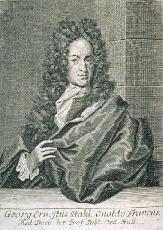
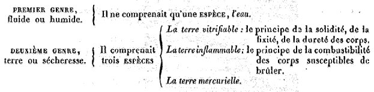
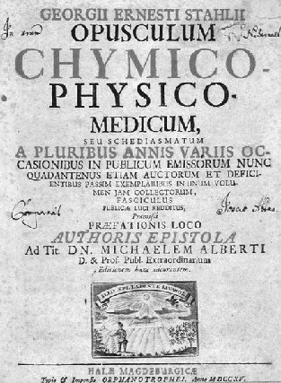
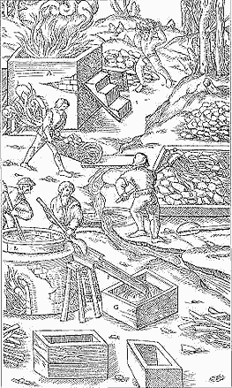
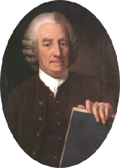
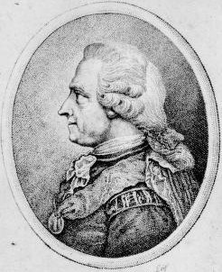
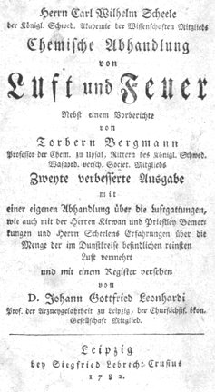
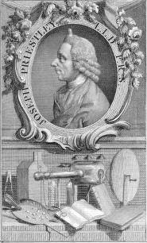

Études historiques : III. Eugène Chevreul, critique de Hoefer
revu le 30 août 2004
plan : 13ème article : Stahl - PROPRIÉTÉS ESSENTIELLES ET CARACTÉRISTIQUES DU PHLOGISTIQUE - DES CORPS MINÉRAUX CONSIDÉRÉS EN GÉNÉRAL, PAR RAPPORT AU PHLOGISTIQUE - DES CORPS MINÉRAUX DÉPOURVUS DE PHLOGISTIQUE - DU PHLOGISTIQUE DANS LES CORPS VIVANTS - DU PHLOGISTIQUE DANS L'ATMOSPHÈRE - MANIÈRE DONT STAHL A ENVISAGÉ LA FERMENTATION - STAHL A MÉCONNU L'EXISTENCE DES GAZ ET L'ACTION CHIMIQUE DE L'AIR - 14ème article - Pott Eller Newmann Marggraf CHIMISTES SUÉDOIS : Brandt - Wallerius - Swedenborg - Swab - Cronstedt - Scheffer - Faggot - Brouwall - Funck - Bergmann - Scheele - Priestley - Conclusion - Notes : 1-2. Stahl - 3. Margraff - 4. Brandt - 5. Swendenborg - 6. Cronstedt - 7. Scheele - 8. PriestleyArrivé à l'examen de l'hypothèse du phlogistique de Stahl, nous croyons devoir en parler avec quelques détails, parce qu'elle est le premier essai d'une théorie chimique, et que le docteur Hoëfer ne l'a exposée que très brièvement.
George Ernest Stahl.1
De 1660 à 1734

L'étude de Stahl est certainement une des plus intéressantes que l'on puisse faire, nous ne disons pas seulement au point de vue spécial de l'histoire de la chimie, mais encore au point de vue général de l'histoire de l'esprit humain, parce qu'elle montre jusqu'à l'évidence comment des hommes, dont l'influence sur le mouvement d'une science a été des plus grandes, peuvent cependant avoir eu les yeux fermés sur la conséquence de certains faits de cette science qu'ils connaissaient pourtant. Si beaucoup de gens ne conçoivent point que des hommes éminents puissent avoir professé des systèmes erronés pendant la plus longue période d'une vie où ils ont joui de la plénitude de leur raison, cependant, pour celui qui a médité sur la manière dont l'esprit humain commencé à procéder dans la recherche de la vérité, ce phénomène psychologique n'a rien d'étonnant, car, loin d'être un cas exceptionnel, il tient à la nature même des facultés bornées de l'homme. Stahl, dès son début dans la science, chercha à connaître la nature des corps, et le dernier ouvrage qu'il publia en 1731, trois ans avant sa mort, atteste que cette étude ne cessa jamais de l'occuper. L'appréciation des travaux d'un tel homme exige que nous résumions les opinions principales qui ont été émises sur la nature de la matière, afin que nous puissions analyser les idées d'aprés lesquelles, à différentes époques, on admit tels éléments ou tels principes, pour expliquer la diversité de propriétés des corps avec lesquels nous sommes en relation. Nous en avons fait la remarque, il y a plus de trente ans, et nous l'avons reproduite dans ce journal : lorsque, rejetant l'opinion de l'existence d'une matière unique, on chercha à expliquer la diversité des propriétés de la matière, en les rapportant à plusieurs corps élémentaires, évidemment ce qui frappa les yeux avant tout, c'est la diversité d'agrégation des particules matérielles qui nous offre le solide, le liquide, le gaz et le feu. Dès lors, n'est-il pas tout simple que ces états aient été représentés par quatre éléments, la terre le type du solide, l'eau le type du liquide, l'air le type du fluide élastique, et enfin le feu présentant le type de la matière raréfiée à l'extrême, que l'on dit aujourd'hui être à l'état impondérable. N'est-ce pas parce que cette distinction paraît si simple et si naturelle, qu'elle a été admise comme théorie des quatre éléments, par la plupart des philosophes grecs et ceux du Moyen Âge ? et que, dans le dix-huitième siècle, en 1766, l'illustre Macquer disait encore :
« on reconnaîtra, non sans doute sans en être étonné, que nous admettons à présent, comme principes de tous les composés, les quatre éléments, le feu, l'air, l'eau et le terre, qu'Aristote avait indiqués comme tels, bien longtemps avant qu'on eût les connaissances de chimie nécessaires pour contrôler une pareille vérité. » (Dictionnaire de chimie, première édition, 1766, tome II, pages 326 et 327.)
Au point de vue de la science physique, et à une époque où les propriétés chimiques étaient encore inconnues, on pouvait se rendre compte de la constitution des corps en rattachant la cause de la diversité de leurs propriétés aux quatre éléments, de manière que la terre en représentait la solidité, la fixité au feu on la sécheresse, l'eau la liquidité, l'air la fluidité élastique et le feu le principe qu'on qualifie aujourd'hui d'éthéré ou d'impondérable : les propriétés les plus générales de la matière se trouvaient donc ainsi représentées par des corps-types devenus principes ou causes de propriétés spécifiques. D'un autre côté, on pouvait encore s'expliquer la persistance de l'essence de ces quatre éléments, en considérant chacun d'eux comme formé d'atomes homogènes indivisibles, doués de propriétés spécifiques invariables. Mais, évidemment, lorsqu'on chercha à approfondir davantage la nature de la matière, la théorie des quatre éléments dut paraître insuffisante pour en déduire la cause des propriétés de certains corps, qu'un motif quelconque engageait à connaître ; car, répétons-le, la distinction des quatre éléments et l'hypothèse des atomes, telles qu'elles ont été exposées par les Anciens, dépendent de considérations purement physiques. Aussi, lorsque les métaux furent devenus pour beaucoup d'hommes un sujet d'expériences, dont le but était de changer ceux qu'ils traitaient de vils, de communs ou d'imparfaits,en métaux parfaits à leurs yeux, comme l'argent et l'or, ils sentirent la nécessité d'admettre d'autres éléments que la terre, l'eau, l'air et le feu, avant même qu'ils eussent nettement aperçu la différence existant entre les propriétés physiques de la matière et ses propriétés chimiques. La plupart des alchimistes, avec Isaac les Hollandais, Basile Valentin et Paracelse, assignèrent aux métaux trois éléments, le sel, le soufre et le mercure ; quelquefois on les distingua par l'expression de principes chimiques d'avec les quatre éléments que l'on quaiifiait alors de physiques. Cette distinction, admise dès le XVIe siècle, justifie parfaitement la manière dont nous exposons l'histoire des idées qu'on s'est faites de la nature des corps, aux différentes époques de la science. L'existence des trois principes chimiques dans les métaux, échappant à une démonstration expérimentale, ceux qui l'admirent comme réelle ne purent s'accorder sur la manière d'en définir l'essence. Les uns prétendirent que les trois principes chimiques existants dans tous les corps ne différent pas du sel, du soufre et du mercure que l'on trouve dans la nature minérale, tandis que, pour les autres, le sel [rappellons que le sel était appelé arsenic par les plus anciens alchimistes - c'est l'équivalent du Corps] fut le principe ou la cause de la concrétion, de la fixité, comme le soufre et le mercure le furent, le premier, de l'inflammabilité, de la couleur, et le second, de la fusibilité et de la volatibilité sans combustion. Les trois principes ainsi envisagés, véritables éléments, étaient donc fort différents du sel, du soufre et du mercure, tels qu'ils se manifestent à nos sens dans le monde minéral ; évidemment les noms vulgaires devenaient symboliques. Il faut ajouter que les chimistes, alchimistes, médecins ou pharmaciens qui travaillèrent particulièrement sur les matières d'origine organique, ayant soumis celles-ci à la distillation sèche, furent conduits, par la nature même des produits de cette opération, à admettre, sinon comme principes élémentaires, du moins comme principes principiés ou immédiats, le phlegme [Esprit], l'huile [Âme], un caput mortuum [Corps]. Ainsi que nous l'avons dit dans un article précédent, Robert Boyle combattit l'existence des trois principes chimiques et Becher admit d'autres éléments. Cependant, loin de proscrire explicitement comme erreur l'existence du sel, du soufre et du mercure dans les corps, Becher la reconnut, mais toutefois en prétendant qu'ils différaient absolument du sel, du soufre et du mercure vulgaires, et il ajouta que, lors même qu'on retirerait des métaux du sel, du soufre et du mercure vulgaires, il faudrait se garder d'en conclure qu'ils y existeraient tout formés, car ils seraient, selon lui, de nouvelle formation. D'après Becher les métaux devraient au sel le volume, la pesanteur,la liaison des parties, la solidité, la fixité au feu et la fusibilité ; au soufre la couleur, la combinaison intime et exacte des parties, une facile fusion parce qu'il est plus susceptible du mouvement igné et domine dans toutes les substances inflammables, enfin ils devraient au mercure la combinaison la plus intime, la liaison, la ductilité, la ténacité, et ce mercure ferait la base des métaux. [Il faut comprendre à deux niveaux ce que dit Chevreul. Il est clair que ces principes tels que les admet Becher sont faux, considérés du point de vue de la science actuelle. Cependant, pour l'alchimie, cette façon de raisonner est exacte et les correspondances restent valables, si l'on se place du point de vue allégorique. Il est vrai que le Sel - l'Arsenic - assure la cohésion de la Pierre, puisqu'il en constitue son squelette silicato-alumineux ; le Soufre est le principe « tingeant » qui assure la couleur de la Pierre et qui l'oriente en en déterminant la forme. Enfin, le Mercure représente le « bain des astres » : c'est un fondant alcalin dont la très lente volatilisation assure la cristallisation des sels qui y sont dissous sous forme d'oxydes - chaux métalliques des anciens auteurs - et qui « meurt de ses propres plumes » pour employer une expression alchimique à peine imagée.]
Les corps que Becher considérait comme les vrais éléments de la. matière étaient au nombre de quatre espèces, qu'on peut répartir en deux genres, de la manière suivante :
Becher qualifiait les trois derniers éléments de terre, à cause de leur sécheresse qu'il opposait à la propriété humide de l'eau. Quant au sel, si on peut croire, par un passage de ses ouvrages, qu'il l'ait regardé comme un principe, on peut en citer d'autres où il le considére comme résultant de l'union d e l'eau et de la terre.
Enfin Becher, en distinguant des composés de différents ordres, eut une idée heureuse, comme nous le dirons tout à l'heure ; Stahl, en la développant montra qu'il en avait parfaitement apprécié la valeur. Stahl, adoptant encore les idées de Becher, rejeta du groupe des éléments, le sel, le soufre et le mercure vulgaires, préférant admettre pour tels, l'eau, la terre vitrifiable, la terre inflammable et la terre mercurielle. [ces trois terres sont exactement superposables aux trois principes des alchimistes ; moins abstraites dans leurs noms, on devine que sous la terre vitrifiable se cache un composé siliceux. La terre inflammable - futur phlogistique de Stahl - cache le Soufre et le terre mercurielle, l'élément « moyen » ou le milieu qui permet de conjoindre la terre vitrifiable à la terre inflammable -] Après avoir insisté sur les idées grossières que devaient avoir les personnes pour lesquelles les éléments des métaux étaient le sel, le soufre et le mercure vulgaires, et montré combien les idées de Becher, qui rejetait cette manière de voir, étaient plus élevées, il fait remarquer la différence qu'il y a entre connaître quelque chose par les sens, ou en acquérir la connaissance par la médiation et les réflexions. Stahl se montre là tout entier à découvert : évidemment, à l'époque où il vécut, l'analyse chimique était trop imparfaite pour que les faits qu'il observait ne fussent pas coordonnés d'après la méthode a priori, au lieu de l'être par la méthode a posteriori, et qu'au lieu de fonder une véritable théorie, il ne pût faire qu'une hypothèse passagère ; mais cette hypothèse fut la première tentative d'un système propre à expliquer un des phénomènes les plus généraux des actions moléculaires, celui de la combustion. Pourquoi Stahl, ennemi de l'alchimie, après en avoir constaté l'impuissance, plagie-t-il Becher, qui a foi à la transmutation des métaux, au-dessus de Kunckel dont les écrits sont bien plus positifs que ceux de Becher, par le grand nombre d'observations exactes qu'ils renferment ? C'est que Stahl a été frappé du phénomène du feu chimique, et que le seul Becher a parlé d'un élément dans lequel réside la propriété inflammable ; c'est cet élément qui occupera la pensée de Stahl, pendant près d'un demi-siècle, et qui, sous le nom de phlogistique, donnera naissance au premier essai de théorie chimique ; mais, avant de l'examiner, parlons des développements que Stahl ajouta à la distinction que Becher avait faite des combinaisons de différents ordres.
- Les quatre éléments ou principes primitifs, en s'unissant ensemble, formaient des combinaisons du 1er ordre, que Becher et Stahl appelaient mixtes.
- Les mixtes, en s'unissant ensemble ou avec un élément, formaient des combinaisons du 2ème ordre, qu'ils appelaient composés proprement dits.
- Les composés, en s'unissant avec un mixte, formaient des combinaisons du 3ème ordre, qu'ils appelaient décomposés.
- Les décomposés, en s'unissant avec un corps quelconque, formaient des combinaisons du 4ème ordre, qu'ils appelaient surdécomposés.
Ainsi que nous l'avons dit, Newton a envisagé la constitution du corps sensible aux organes de nos sens, comme le résultat de l'union de molécules de différents ordres, chacune étant un système d'atomes homogènes, soit simples, soit composés, réunis en vertu de la force nommée auiourd'hui de cohésion ; maintenant, faisons remarquer la différence existant entre cette conception qui, purement physique, s'appliquant à l'agrégat, le montre comme pouvant avoir plus de parties vides que de pleines, et la conception de Becher et de Stahl qui, exclusivement chimique, s'appliquant à des corps de diverses natures, les montre unis ensemble en vertu de l'attraction moléculaire d'affinité, de manière à constituer des composés chimiques de différents ordres de complexité. Ce préalable était nécessaire avant d'exposer la théorie du phlogistique.
§ I. PROPRIETES ESSENTIELLES ET CARACTERISTIQUES DU PHLOGISTIQUE, ET THEORIE DE LA COMBUSTION,
Qu'est-ce que le phlogistique pour Stahl ? C'est la vraie matière du feu. Se trouve-t-elle à l'état de combinaison ? elle est latente, ou, en d'autres termes, insensible à nos organes ou au thermomètre. Se sépare-t-elle, sous l'influence de l'air, du mixte dont elle faisait partie ? elle nous devient sensible en produisant le double phénomène de chaleur et de lumière qui constitue le feu. Si, lors de son dégagement sous l'influenee de l'air, il se sépare de l'eau, celle-ci, prenant l'état de vapeur, projette en quelque sorte le feu dans l'espace, de manière à produire une flamme. Stahl connaissait donc parfaitement la nécessité de l'intervention de l'air dans la combustion, mais quel rôle jouait-il ? Un rôle purement mécanique suivant lui : il communiquait par le choc un mouvement si rapide au phlogistique, que celui-ci, devenant libre de toute entrave, se dégageait à l'état de feu ; et ce feu durait tant que les particules du phlogistique restaient animées d'un mouvement suffisamment rapide de rotation. On voit, d'après cela, que le phlogistique n'est point le feu, lors même qu'étant isolé, ses particules sont en repos, ou si, étant en mouvement, ce mouvement n'atteint pas à un certain degré de vitesse ; sous ce rapport, le phlogistique peut être comparé d'air qui est en repos, ou dont le mouvement vibratoire est trop faible pour déterminer en nous la sensation du son. Le phlogistique une fois mis en liberté, après avoir perdu le mouvement qui le rendait lumineux, est réduit en particules d'une extrême ténuité, invisibles et insensibles à nos organes, si elles ne produisent pas de la chaleur, en raison d'un léger mouvement qu'elles paraissent conserver ; Stahl dit que la chaleur est un feu invisible et très-divisé. Si le phlogistique est très divisible il n'a pas d'élasticité ; il diffère donc beaucoup de l'air sous ce rapport ; c'est en 1731 que Stahl reconnaît, de la manière la plus explicite, l'erreur qu'il avait commise autrefois en attribuant l'élasticité au phlogistique. [cette élasticité de l'air avait été appelée autrefois par Van Helmont le « magnale » -] La combustion, dans l'hypothèse que nous examinons, n'est donc que la séparation du phlogistique d'avec des principes qui constituent le plus souvent un mixte ; l'union des éléments du mixte se trouve donc rompue par une action mécanique de l'air, action qui devait tout à fait, correspondre, dans les idées de Stahl, à ce qu'on appelle aujourd'hui en chimie des actions de présence. Stahl a parfaitement distingué un corps qui brûle en perdant son phlogistique, des corps qui, comme le verre, l'argile, la pierre, deviennent incandescents, lorsqu'on les expose à une flamme, à un brasier, au foyer d'une lentille ou d'un miroir ; alors, il n'y a pas de séparation de phlogistique, mais simple mouvement de rotation des molécules du corps incandescent, imprimé par le phlogistique de la flamme, du brasier, ou par la lumière condensée qui, selon lui, n'est qu'un corps très-divisé animé d'un mouvement rapide ; l'air même, ajoute-t-il, peut devenir incandescent. Enfin, le frottement rapide du bois sur lui-même en détermine l'ignition, et une barre de fer rougit par une percussion continue, comme Borelli l'a observé. Stahl explique ces phénomènes par le mouvement de rotation des molécules du bois et du fer. Le phlogistique est le principe de la couleur et de l'odeur des corps ; mais Stahl ne cherchera pas à démontrer la présence de ce principe, dans un corps coloré ou odorant, il la conclura de ce que ce corps est coloré ou odorant. Les expériences que Stahl considère comme démonstratives de sa théorie, sont : l'analyse du soufre et sa synthèse.
Analyse du soufre.
D'après ce que nous avons dit, la combustion du soufre n'est que la séparation du phlogistique d'avec une matière acide. La séparation n'est-elle que partielle, on a l'acide du soufre phlogistiqué (acide sulfureux). Est-elle totale, on a l'huile de vitriol (acide sulfurique), que Stahl considère comme un sel, c'est-à-dire, un mixte formé de terre vitrifiable et d'eau. En unissant le soufre à la potasse on forme une matière dont on peut séparer le soufre de la solution du sulfure, en y ajoutant du vinaigre distillé. Eh bien, qu'on calcine le sulfure avec le contact de l'air, le soufre perd son phlogistique et il reste du tartre vitriolé (sulfate de potasse). C'est donc par le phlogistique contenu dans le sulfure que celui-ci se distingue du tartre vitriolé (sulfate de potasse). [il s'agit là d'une indication très importante pour l'alchimiste : le tartre vitriolé apparaît ainsi, selon les principes de Stahl, comme une terre mercurielle déphlogistiquée -]
Synthèse du soufre,
Que l'on unisse l'huile de vitriol à la potasse, on a le tartre vitriolé (sulfate de potasse). Que l'on chauffe dans un creuset ardent parties égales de ce sel et de charbon, on obtient une matière rouge ; qu'on la fasse dissoudre dans l'eau, qu'on ajoute du vinaigre distillé à la solution, et de véritable soufre en sera séparé. [un exemple de réincrudation -]
Conclusion.
Par la combustion on a opéré l'analyse du soufre, le phlogistique s'est dissipé, et l'huile de vitriol a été isolée. [pris dans l'ancienne terminologie, on dévoile ainsi l'acide vitriolique, qui était réputé être l'esprit universel -] En chauffant avec le charbon la potasse unie à l'huile de vitriol, le phlogistique du charbon, en se portant sur celle-ci, reforme du soufre.
Objections.
Stahl établit d'une manière très-explicite que, pour connaître parfaitement la nature d'un composé, il ne suffit pas d'en séparer les principes par l'analyse, mais il faut, en outre, reproduire ce composé en en réunissant les principes séparés en premier lieu ; et certes, en présentant cette proposition comme une règle à suivre en chimie, il se montre fidèle à la méthode expérimentale, puisque l'un des résultats sert de contrôle â l'autre. Mais, malheureusement, dans l'application, il ne prend point en considération les quantités pondérales séparées par l'analyse d'un corps donné, qui devraient reproduire ce même corps par la réunion qu'en ferait la synthèse. S'il semble naturel de penser que Stahl aurait modifié ses idées en cherchant à contrôler toutes ses analyses par la synthèse au moyen de la balance, [il est très curieux de noter que les alchimistes ont toujours insisté sur cet aspect pondéral et qu'ils ont même été conduits à définir ce qu'ils appelaient le poids de nature et le poids de l'art. Par poids de nature, il signifiaient ainsi les proportions des éléments qui se combinent entre eux et avouaient que ce poids échappait totalement à l'entendement humain - il n'avaient aucune idée des liaisons moléculaires, évidemment -. Quant au poids de l'art, ils entendaient par là les quantités de substances introduites dans un creuset, par exemple, et plus ou moins propres à opérer la synthèse d'un Mixte donné - ] sans laquelle on ne peut obtenir que des probabilités au lieu de la certitude dans les expériences chimiques, n'oublions pas, pour rester dans le vrai, ce qu'il a dit de la supériorité de connaître une chose par la méditation et les réflexions, relativement à la connaissance qu'on en acquiert par les sens, et ajoutons, comme preuve de l'éloignement qu'il dut avoir toujours de l'emploi de la balance pour contrôler ses résultats, qu'il ne sentit jamais la force de l'objection qui lui fut faite de leur augmentation de poids de certains métaux par la calcination, augmentation qui évidemment n'était pas d'accord avec l'opinion d'après laquelle le produit de cette calcination était un corps pesant, MOINS du phlogistque. En effet, il répondit à cette objection en disant, d'après Kunckel, que la calcination augmentait le poids d'un métal calciné, parce qu'elle augmentait beaucoup la densité de la matière ; et pour preuve il citait, toujours d'après Kunckel, qu'un cent d'édredon non foulé augmentait de plusieurs livres après qu'on l'avait fortement comprimé dans un sac. D'un autre côté, Stahl n'a point expliqué d'une manière satisfaisante l'action du nitre sur les matières combustibles. Cette explication était, il fait l'avouer, bien difficile dans l'hypothèse du phlogistique, lorsqu'il savait que le nitre chauffé se fond paisiblement sans donner aucun signe de combustion, et que, mis dans un vase où l'air n'intervient pas, il fait cependant brûler vivement, et souvent avec explosion ou détonation, une matière combustible qui, dans cette même circonstance, ne brûlerait pas, quoique chauffée au même degré, sans le contact du nitre ou de l'air. Voyons l'explication de Stahl. Le nitre contient du phlogistique. Eh pourquoi ?
(a) Parce qu'il tire son origine des substances végétales et animales pourries, dans lesquelles il y a des substances grasses ;
(b) Parce qu'il est volatil, coloré et odorant, ou plutôt parce que les produits de sa décomposition sont doués de ces propriétés.Maintenant, Stahl, partant du principe que deux choses agissent plus fortement qu'une seule quand elles sont mises en action, il en tire la conséquence que le nitre contenant du phlogistique, lorsqu'on l'aura mis avec une autre matière combustible qui en contient pareillement, la combustion devra être accélérée, parce qu'il y aura deux quantités de pblogistique en présence, et que le mouvement vibratoire de l'une, excité par le feu, favorisera le mouvement vibratoire de l'autre, de manière à triompher de l'affinité. Le nitre est formé d'une molécule de terre (alcali), + d'une molécule d'eau, + d'une molécule grasse (phlogistique) : ce sont ces deux dernières molécules qui constituent l'esprit acide de nitre ; elles ont une forte affinité mutuelle, car elles se dégagent sous l'inluence d'un acide et de la chaleur, et, quand le nitre est chauffé seul, elles ne se séparent pas de l'alcali. Ajoute-t-on au nitre chauffé une matière coimbustible, par exemple du charbon, elle agit (mécaniquement) sur la matière grasse du nitre pour lui communiquer un mouvement capable de surmonter l'affinité qui l'unit à l'eau, et celle-ci, entrant en expansion, produit l'explosion ou la détonation. C'est donc l'eau qui est la cause explosive de la poudre à canon. On voit comment, dans l'inflammation de la poudre, la théorie de Stahl en déduit des propriétés des éléments qu'il lui suppose. Ainsi le principe inflammable est susceptible de division par lui-même, mais non d'expansion à l'instar, de l'eau. Le phlogistique n'est donc pas la cause de l'explosion ; il l'est de l'ignition par le mouvement verticillaire ou de rotation qu'il reçoit. Le lien de l'affinité une fois rompu par ce mouvement, l'eau, devenue libre en vertu de son expansibilité, le projette dans l'espace environnant. Une objection assez forte à la théorie du phlogistique était tirée du phénomène du feu, qui se manifeste dans l'union du soufre avec les métaux. Évidemment, Stahl reconnaissant que les corps qui se combinent perdent du phlogistique,le produit de la combinaison devait être du soufre moins du phlogistique, et du métal moins du pblogistique, c'est-à-dire un acide du soufre avec une chaux métallique, Or la combinaison se compose réellement de soufre et d'un métal. Il est remarquable que personne, à notre connaissance, n'ait combattu la doctrine du phlogistique par cette considération, et que ce même fait du feu produit par l'union du soufre avec un métal, ait été opposé à la théorie de la combustion de Lavoisier.
§ 2. DES CORPS MINÉRAUX CONSIDÉRÉS EN GÉNÉRAL, PAR RAPPORT AU PHLOGISTIQUE,
A. Corps phlogistiqués,Le phlogistique s'unit aisément avec les corps solides en raison, dit Stahl, de sa nature sèche et terreuse. Le phlogistique existe en combinaison dans les minéraux ou composés inorganiques, tels que le soufre, le phosphore, les matières charbonneuses, les bitumes, le pétrole et les métaux. Le noir de fumée, obtenu de la combustion incomplète d'une huile volatile, n'est, comme tout le monde sait, que du charbon très-divisé et très-pur lorsqu'il a été fortement chauffé sans le contact de l'air. Stahl se le représente comme le phlogistique uni à une très-petite quantité de molécules terreuses d'une extrême finesse; mais remarquons que, dans ses idées mêmes, le noir de fumée ne peut être le phlogistique, par la raison qu'il refuse aux particules de cet élément la propriété de s'agréger entre elles, et que la combustion du noir de fumée n'est que la dispersion de ses molécules phlogistiques dans l'atmosphère. Il n'avait donc aucune idée de l'acide carbonique. Le phlogistique existait dans tous les métaux, suivant Becher et Stahl.
- L'or était formé de phlogistique, de terre vitrifiable et de terre mercurielle, en proportion égale, ou à peu près ;
- L'argent contenait peu de phlogistique, peu de terre mercurielle et beaucoup de terre vitrifiable ;
- Le cuivre contenait du phlogistique et une terre rouge particulière ;
- Le fer était formé de phlogistique et d'une grande quantité d'une terre rouge difficile à vitrifier ;
- L'étain l'était de phlogistique et d'une terre de nature calcaire ;
- Le plomb résultait de l'union du phlogistique et d'une terre jaunâtre vitrifiable très pénétrante ;
- Le mercure passait pour un corps surcomposé avec excès de terre mercurielle. Becher y admettait un métal particulier ;
- L'antimoine (régule) était du mercure coulant, qu'une vapeur arsenicale avait coagulé ; il renfermait, en outre, du phlogistique et une terre vitrifiable. Stahl considérait le sulfure d'antimoine, formé de soufre et de régule, comme un corps surcomposé ;
- Le bismuth était formé de phlogistique, d'un principe arsenical, et d'une terre vitrifiable particulière ;
- Le zinc renfermait du phlogistique et une terre blanche légèrement arsenicale ;
- L'arsenic, enfin, participait à la fois de la nature du métal et de celle du sel.
[la logique du système de Stahl aurait voulu - selon nous - que l'or et l'argent aient été formés de très peu de phlogistique et de beaucoup de terre vitrifiable et la quantité de phlogistique aurait dû croître en fonction des potentiels d'oxydo-réduction des métaux - ]
Si Stahl ne s'est pas expliqué toujours d'une manière aussi précise que nous le disons, l'opinion que nous lui prêtons est celle que lui a attribuée Juncker.
Stahl avait parfaitement reconnu la présence d'un combustible dans l'ammoniaque, car il en donnait pour preuve l'inflammation qui se manifeste lorsqu'on projette dans du nitre chaud du sel ammoniac.
B. Corps déphlogistiqués.
Une fois le phlogistique séparé des corps combustibles en tout ou en partie, Stahl n'avait plus que des idées vagues pour expliquer la diversité de propriétés des matières déphlogistiquées, par la raison qu'en admettant avec le phlogistique, pour éléments de la matière, trois corps seulement, l'eau, la terre vitrifiable et la terre mercurielle, toutes les matières complétement déphlogistiquées ne devaient contenir que ces trois éléments, à la vérité, la distinction de composés de différents ordres de complexité pouvait concourir à l'explication ; Stahl, on peut le dire sans crainte d'être démenti, n'y recourut que fort rarement. Tout en reconnaissant que l'acide sulfureux diffère de l'acide sulfurique parce qu'il retient du phlogistique, cependant Stahl n'en expliquait pas clairement la différence de composition ; l'acide sulfurique était, pour lui, un sel formé d'eau et de terre vitrifiable, comme nous l'avons dit. D'après ce qui précède, on voit, en définitive, que Stahl expliquait d'une manière peu satisfaisante la diversité spécifique des métaux.
§ 3. DES CORPS MINERAUX DÉPOURVUS DE PHLOGISTIQUE.
Les corps dépourvus de phlogistique, selon Stahl, étaient d'abord évidemment les trois éléments : l'eau, la terre vitrifiable, et la terre mercurielle ; puis les sables et les pierres, et enfin la plupart des sels. L'eau ne s'unissait au phlogistique que sous l'influence d'une terre ; cette union se faisait surtout dans les plantes. La terre vitrifiable, en s'unissant à l'eau, produisait des sels. Les sables et les pierres étaient essentiellement formés de terre dépouillée d'eau ; mais Stahl n'a point été heureux dans ses distinctions des matières terreuses. Ainsi, l'alumine, base de l'alun, était pour lui une terre schisteuse [la confusion était due au fait qu'il existe des schistes alumineux et pyriteux ; ces schistes constituent d'ailleurs l'une des matières de base de l'oeuvre et pourraient fort bien figurer le « dragon écailleux » des anciens alchimistes pour autant, admettons qu'il est assez remarquable de voir que la salamandre des Sages, c'est-à-dire l'alumine, est rangée parmi les corps dépourvus de phlogistique, ce qui appapraît parfaitement logique du point de vue de la cabale hermétique. La salamandre, vivant dans le feu, en est elle-même totalement dépourvue...-] ; il confondait avec la chaux la magnésie séparée des eaux mères du salpétrier : et, sous ce rapport, il était moins avancé que J. Hoffmann. La saveur et la solubilité dans l'eau caractérisaient les sels. Leurs éléments essentiels étaient l'eau et la terre vitrifiable ; mais, de ce qu'il y avait de l'eau, et de la terre vitrifiable dans une matière, ce n'était pas un motif d'en conclure l'existence d'un sel. Le sel contenant de la terre vitrifiable devait tendre à s'unir avec toute substance terreuse, par la raison, selon Stahl, que les corps composés s'unissent avec un autre corps, en raison de quelques-unes de leurs parties purement homogènes. C'est par le principe terreux qu'ils s'unissent au phlogistique, parce que celui-ci est de nature terreuse. Le sel, contenant de l'eau, doit être liquéfiable ; mais, dès qu'il l'a perdue ,il est changé en chaux. Les sels sont artificiels ou naturels, minéraux, végétaux ou animaux, fixes, demi-volatiles, volatiles ; enfn, ils peuvent être acides, alcalis ou mixtes, c'est-à-dire neutres.
Acides.
Les sels acides sont l'huile de vitriol, l'acide nitreux, l'acide muriatique ou marin.
L'acide universel est formé d'eau et de terre vitrifiable ; étendu d'eau, c'est l'esprit de vitriol ; concentré, c'est l'huile de vitriol. Contient-il du phlogistique, c'est l'acide nitreux. Contient-il de la terre rnercurielle, c'est l'acide marin.
Alcalis.Les sels alcalis se convertissent en verre, à cause de leur principe terreux vitrifiable. [nous rappelons que les sels alkalis représentent le constituant principal du Mercure philosophique -] Dans l'alcali fixe,il y a du phlogistique, de l'acide végétal et de la terre vitrifiable. L'alcali volatil est un sel formé de terre vitrifiable et d'eau, lequel, sous influence du feu ou de la putréfaction, s'est uni au phlogistique.
Sels mixtes.
Le sel marin, formé d'esprit de sel et d'alcali, est répandu dans le règne minéral et dans le règne végétal et animal. Il peut se changer en terre. Le nitre l'est dans les deux premiers règnes. Enfin, les vitriols, formés d'acide universel et d'une base terreuse ou métallique, le sont dans le règne minéral. Stahl considère le borax comme un composé d'acide universel et de terre vitrifiable. La chaux caustique, qui est une terre sans sel, devient sel en s'unissant à l'eau. Suivant Stahl, à l'état caustique, elle est formée d'une terre fixe et d'une terre volatile ; et, à l'état de chaux éteinte, elle renferme, en outre, une terre saline volatile.
§ 4. DU PHLOGISTIQUE DANS LES CORPS VIVANTS.
Le phlogistique est abondamment répandu dans les végétaux et les animaux .
A. Végétaux.Les végétaux le prennent aux minéraux, aux engrais et à l'atmosphère. La preuve qu'ils puisent à cette dernière source est la grande quantité de phlogistique des arbres, particulièrement des pins, qui croissent dans des sables ou sur des rochers arides. Les végétaux sont formés d'eau, de phlogistique et de terre vitrifiable. Ils puisent leur sel dans la terre et dans l'air ; il parvient à leurs organes au moyen de l'eau ; mais le sel essentiel des végétaux diffère du sel minéral par une forte proportion de phlogistique ou de matière grasse. Le sel est le véhicule de la terre dans les plantes. Stahl attribue la cause des différences de leurs sels essentiels à la diversité de la base terrestre qui les constitue respectivement. Le sel acide varie donc spécifiquement, selon la nature spécifique des plantes ; il est composé d'eau et de terre vitrifiable, ou d'eau et de substance oléo-tartaréo-nitreuse. L'acide acétique contient de la terre. Le sel alcali, comme nous l'avons dit, est formé d'acide végétal, de phlogistique et de terre vitrifiable. Parmi les sels mixtes des végétaux, on trouve le tartre vitriolé, le sel marin, le nitre, etc. Les huiles végétales renferment beaucoup de phlogistique et d'eau, unis par un peu de sel acide et une quantité moindre encore d'une terre extrêmement subtile. On y trouve accidentellement du mucilage. Le camphre contient beaucoup de phlogistique avec de l'eau et de la terre. Les résines sont formées de terre vitrifiable, d'eau et d'acide végétal. Quant aux gommes, elles contiennent plus d'eau et moins d'huile. L'esprit-de-vin a une composition analogue à celle des résines. Stahl avait bien observé que le vin renfermé dans des tonneaux y devient plus alcoolique à cause de l'évaporation de l'eau, qui se fait par le bois.
B. Animaux.
Stahl a parfaitement vu l'analogie de composition des animaux avec celle des végétaux ; il pensait que le phlogistique, après s'être accumulé dans ces derniers, s'y fixant à l'eau par l'influence du sel, passait dans les animaux pour les nourrir. En définitive, selon lui la matière inflammable tirée du règne minéral devenait organique dans le végétal, et pouvait alors servir à la nourriture des animaux. Cette idée de Stahl, prise dans sa généralité, est tout à fait conforme aux idées actuelles. L'acide animal avait une composition analogue à celle de l'acide végétal ; seulement il en différait par une plus grande volatilité. Les graisses animales étaient formées de phlogistique huileux, d'eau, de terre calcaire, et quelquefois d'un peu de mucilage.
Le phlogistique, provenant des combustions, des fermentations ou décompositions des matières organiques, se disperse, avons-nous vu, dans l'atmosphère, Stahl admet qu'il ne va pas au-delà. Voici, du reste, la manière dont il se représentait l'atmosphère. Il la partageait en trois régions.1. La région inférieure, contenant les atomes les plus analogues à ceux des parties solide et liquide du globe. Elle comprenait donc de l'eau, du phlogistique, des matières terreuses très-déliées, des matières salines, en un mot, il considérait cette région comme le réceptacle des exhalaisons de la terre ;
2. La seconde région, ou la région moyenne, lui paraissait composée d'un air très-pur, très-élastique, après lequel l'eau était la substance la plus propre à recevoir le mouvement ;
3. La région supérieure ou éthérée était composée d'une matière infiniment plus subtile que l'air, mais ni condensable ni expansible, à peu près de la nature du phlogistique. Elle peut entrer, disait-il, en combinaison, et alors elle est susceptible de recevoir le mouvement igné.Ces régions n'étaient pas, selon lui, absolument isolées les unes des autres ; les phénomènes météoriques indiquaient qu'il devait y avoir souvent communication ou mélange des corps de l'une avec ceux des autres. Outre le phlogistique libre, dispersé dans l'atmosphère, il y en avait une portion qui était unie à la vapeur d'eau élastique et à la vapeur visible qui forme le nuage. Et voici comment Stahl envisageait les corps qui sont en mouvement dans l'atmosphère. L'air est mû dans les vents. Les corpuscules phlogistiques aqueux et vaporeux le sont dans les nuages. Et lorsque ces mêmes corpuscules sont violemment écartés les uns des autres, il en résulte des éclairs et du tonnerre ; alors le phlogistique, se séparant de l'eau, produit le feu, et l'eau, séparée du phlogistique, tombe sous la forme de pluie. Stahl, en définitive, a parfaitement aperçu les rapports existant entre l'atmosphère , qu'il appelle le règne météorique , et les êtres vivants composant le régne végétal et le règne animal.
Dans l'examen des travaux de Stahl on ne peut se dispenser de parler de la fermentation, dont il s'occupa longtemps au double point de vue de la théorie et de l'application. Il publia, dès 1697, sous le titre, de Zymotechnie un ensemble d'idées remarquables, et, en 1728, il le rappela pour montrer tout ce qu'il y avait encore de questions à résoudre avant d'expliquer des opérations que l'on exécute journellement dans l'économie domestique et dans des arts qui empruntent aux végétaux leur matière prernière. Si Van Helmont étendit à l'infini le rôle des ferments dans la nature matérielle, morte et vivante ; si ses idées, restreintes au corps de l'homme et des animaux, furent adoptées par Th. Willis et d'autres médecins, remarquons que Stahl, après eux, se montra bien plus réservé dans la généralisation de ses vues, parce qu'il restreignit ses observations à ce que tout le monde appelle fermentation des matières organiques privées de la vie. Stahl avait bien apprécié la triple influence de l'air, de l'eau, et d'une certaine température pour la fermentation. Il devait à Bohn l'observation de la nécessité de l'air pour la fermentation du moût du suc de groseille, etc., car, hors du contact de l'atmosphère, ces sucs ne fermentent pas. Cette observation, qui remonte à Van Helmont ,et qui fut reproduite par Mayow, en 1674, a été longtemps oubliée ; car, en, 1810, Gay-Lussac la reproduisit comme nouvelle, et encore aujourd'hui peu de personnes savent qu'elle remonte à plus de deux siècles. Stahl distingue dans la fermentation deux périodes :- Dans la première, les différentes molécules de la matière fermentescible sont agitées doucement. Des parties plus ou moins atténuées se combinent ensemble.
- Dans la seconde, des parties sont séparées d'un mixte en vertu du mouvement qu'elles ont reçu ; alors celles qui sont analogues se réunissent, à l'exclusion des autres.
Qu'est-ce qu'un ferment ? Pour Stahl, c'est une matière fermentée dont les parties sont animées d'un certain mouvennent qu'elles communiquent aux parties de la liqueur susceptible de fermenter, qui leur sont analogues. L'action du ferment est donc encore pour Stahl purement dynamique ; elle rentre dans ce que nous appelons les actions de présence, et nous ajoutons que cette manière de voir, dans ces dernières années, a été reproduite comme nouvelle.
§ 7. STAHL A MECONNU L'EXISTENCE DES GAZ ET L'ACTION CHIMIQUE DE L'AIR.
Stahl a complètement méconnu la part de l'air dans les phénomènes chimiques. Car il dit, dans ses Trois cents expériences :« Cette expansion élastique est essentiellement si propre a l'air, qu'on n'a jamais pu apercevoir qu'il s'agrégeât jamais sous une forme épaisse, ni seul, ni dans aucun mixte. »
Il est donc moins avancé en 1731, que ne l'était Jean Rey, en 1630, qui cherchait à démontrer cette fixation ; que Jean Mayow, en 1674, qui admettait deux corps au moins dans l'air, l'un, l'esprit nitro-aérien, propre à faire brûler les corps combustibles et à entretenir la vie des animaux, et l'autre, incapable de remplir ce double rôle dans l'économie de la nature ; enfin que Hales, qui en 1727, avait reconnu la présence de l'air fixé dans une foule de corps, et le recueillait au moyen de cloches remplies d'eau.
Comment Stahl, en méconnaissant l'air fixé [gaz carbonique : CO2] ou le gaz, va-t-il expliquer les effervescences qu'on remarque dans une foule de circonstances, effervescences qu'il dit que Van Helmont attribue à un gaz et Kunckel au fulmen ? Celles qui résultent de l'action des acides sur les alcalis (carbonatés) seront dues, selon lui, au gonflement de l'air interposé entre les parties des matières réagissantes ; il attribuera au dégagement de l'eau réduite en vapeur les effervescences produites par le fer et l'eau-forte, l'or et l'eau régale, l'huile de térébenthine et l'acide nitreux, le sel marin et l'eau forte ; etc., etc. Selon lui, le phlogistique et le principe terreux, quoique fixes a l'état libre, rendent, par la combinaison, l'eau plus expansible qu'elle ne le serait sans cela. Ici Stahl reconnaît la puissance de l'affinité, Cela admis, il reconnait, en outre, la présence de l'eau dans toutes les effervescences. Dès lors, quand des matières effervescentes sont exposées dans des circonstances convenables, les molécules sont mises en mouvement, les molécules de l'eau se dégagent, et, obéissant à la force d'expansion qui leur est propre, elles occupent tout à coup un volume beaucoup plus grand que celui qu'elles occupaient auparavant, et de là une effervescence qui, quand elle est rapide, donne lieu à une explosion, à une détonation même. Stahl s'est élevé au-dessus des idées alchimiques, et il les a toujours combattues pour assurer le triomphe des idées scientifiques ou purement chimiques. [Stahl, dans certains sites que nous avons visité est pourtant réputé alchimiste -] Il admettait que les métaux avaient été créés avec tous les autres corps par Dieu au commencement du monde. Il lui paraissait absurde de croire qu'avec le temps ils s'anoblissaient en se perfectionnant. Il était donc, en principe, opposé au changement des espèces. Il ne croyait pas à l'influence des astres sur les métaux. Selon lui on ne trouvait, dans les métaux, ni mercure coulant ni aucun sel. Ils étaient formés, comme nous l'avons dit, de phlogistique et d'une chaux de nature terreuse, mais il ne s'est pas suffisamment expliqué sur les caractères spécifiques des chaux métalliques, ni sur l'influence que des restes de phlogistique pouvaient avoir ; car il admettait qu'une chaux métallique, sous la forme de verre, n'excluait pas de sa composition une certaine quantité de phlogistique. Beaucoup de personnes ont pensé que Stahl s'était peu occupé d'expériences ; lorsqu'on lit ses nombreux ouvrages on acquiert bientôt la preuve du contraire ; mais, pour celui qui a une idée juste de l'objet de la chimie et du but spécial qu'elle se propose en cherchant à obtenir les corps à l'état de types purs de toute matière étrangère à leur essence respective, soit qu'il s'agisse d'un corps simple ou d'un corps composé défini, Stahl manquait de l'esprit du chimiste spécial ; il était grand observateur et disposé à généraliser les idées qu'il avait recueillies de l'étude attentive d'expériences qui étaient toujours subordonnées à des vues théoriques. En outre, d'accord en ceci avec Van Helmont, il considérait la matière comme inerte, et le mouvement qui l'animait lui venait, selon lui, d'une cause étrangère à sa nature ; il était donc disposé à admettre des agents immatériels, cependant il ne poussait pas ces idées aussi loin que Van Helmont, puisqu'il considérait la propriété élastique comme inhérente à l'air et à la vapeur aqueuse, mais, selon lui, les corpuscules de l'eau pouvaient s'agréger, tandis que ceux de l'air ne le pouvaient pas, ainsi que nous l'avons fait remarquer déjà. Les principaux ouvrages de Stahl sur la chimie sont :

frontispice de l'Opusculum Chymico physico medicum
- Zymotechnia Fundamentalis, 1697 ;
- Observationum chymico-physico-medicarum curiosarum, mensibus singulis bono cum Deo continuandarum, 1697 à 1698. C'est dans la première dissertation que se trouve experimentum novum verum sulphur arte producendi ;
- Specimen Beecherianum, 1698 ;
- Observationes selectiones physico-chymico-medicae curiosae, 1709 ;
- Solutio martis in puro alcali et anatomia sulphuris communis ;
- Metallurgiae pyrotechnicae et docimasiae metallicae fundamenta ;
- Traité du soufre (en allemand), 1718 ;
- Traité des sels (en allemand), 1723 ;
- Fundamenta chymiae dogmaticae et experimentalis, 1723 ;
- Experimenta, observationes, animadversiones ccc numero chimicae et physicae, 1731.Les ouvrages de Stahl renferment de grandes vues, mais ils ne se recommandent ni par la classification des matériaux, ni par la clarté et la correction du style, du moins ceux qu'il a écrits en latin. D'un autre côté, ses ouvrages les plus volumineux présentent une reproduction continuelle des mêmes idées sous les mêmes formes.
Le peu de connaissance que l'on a généralement de l'ensemble des travaux chimiques de Stahl, la manière incomplète dont on a parlé de l'hypothèse du phlogistique2, et, comme nous l'avons dit en commençant cet article, le petit nombre de pages consacrées par le docteur Hoëfer à l'homme qui le premier eut le mérite incontestable de réunir beaucoup de faits chimiques dans l'intention de les coordonner en théorie, nous ont déterminé à présenter à nos lecteurs l'exposé que nous venons de tracer ; nous avons préféré lui donner de l'extension et nous restreindre dans le compte qui nous reste à rendre de la fin de l'ouvrage du docteur Hoëfer, par le motif que les travaux de Marggraff, de Bergmann, de Scheele et de Priestley, connus de tous, sont depuis longtemps appréciés à leur juste valeur.
QUATORZIÈME ET DERNIER ARTICLE.
De 1692 à 1777,
Il était médecin. Il adopta les idées chimiques de Stahl. S'il publia d'une manière continue, depuis 1716 jusqu'en 1757, des dissertations sur des sujets chimiques très-variés, s'il se livra à des expériences nombreuses pour connaître les effets que la chaleur exerce sur un grand nombre de terres ou de pierres soit isolées soit mêlées entre elles ou avec des matiéres salines, il faut avouer que ses recherches ne se recommandent ni par la précision des expériences ni par l'exactitude de ses vues. Il manquait de l'esprit critique qui eût été nécessaire pour lui faire apprécier la valeur des principes théoriques qu'il empruntait à ceux qu'il considérait comme ses maîtres.
De 1689 à 1760
L'histoire des sciences offre peu d'exemples, heureusement, de débats scientifiques où l'oubli des convenances et du respect que tout homme bien élevé doit à la société ait été aussi grand, de part et d'autre, qu'il le fut entre J. Pott et Eller, premier médecin du roi de Prusse. Eller s'est montré plus compilateur que chimiste distingué : cependant il ne faut oublier ni ses observations microscopiques sur les globules du sang, l'usage qu'il fit d'un micromètre particulier pour en mesurer les diamètres, ni les expériences auxquelles il se livra pour observer au microscope les effets de différents réactifs et médicaments sur le sang frais maintenu à la température du corps.
De 1683 à 1737
G. Newmann professa la chimie à Berlin d'après les idées de Stahl, sous le roi de Prusse, père de Frédéric le Grand. Il sépara de l'huile volatile du thym une matière cristallisable qu'il considéra comme du camphre.
André Sigismond Marggraf,3
[1, 2, 3, 4, 5, 6, 7, 8, 9, 10,]
De 1709 à 1780.
[L'importance de Margraff est tout à fait exceptionnelle pour l'alchimie, telle du moins que nous l'envisageons. C'est à lui que les Artistes doivent la connaissance précise de la Terre, encore appelée par les anciens Adeptes le principe « Corps » ou arsenic par Geber, et que Paracelse avait nommé le principe « Sel », concept d'ailleurs connu bien avant lui. Les alchimistes modernes donnent au Sel l'appellation de résine de l'or ou de « toyson d'or », pour exprimer la vertu bien particulière de la Terre que Marggraf a découverte, et qui est congénère, à certains égards, de la magnésie que signalent tant d'auteurs, y compris Fulcanelli et E. Canseliet -]
Le docteur Hoëfer fait un éloge mérité de Marggraf auquel, selon lui, la postérité na pas entièrement payé son tribut de reconnaissance ; nous souscrivons à cet éloge, mais peut-être le docteur Hoëfer n'a-t-il pas montré en quoi Marggraf se distingue de tous les chimistes qui l'ont précédé. Selon nous, Marggraf a été doué de l'esprit spécial de la chimie. S'il s'occupe des réactions du phosphore et des métaux, il distingue parfaitement ceux qui s'y combinent de ceux qui ne s'y combinent pas, tels que l'argent et surtout l'or. Il produit l'acide phosphorique anhydre par la combustion du phosphore et constate l'augmentation de poids du combustible brûlé ; il obtient le même acide hydraté en brûlant le phosphore par l'acide azotique ; il obtient des phosphates cristallisés ; il prouve que c'est le sel d'urine fixe (phosphate de soude et phosphate ammoniaco-magnésien) qui, lorsqu'on distille l'extrait d'urine, donne le phosphore, de sorte qu'en distillant le sel d'urine fixe mêlé de suie et de sable, on obtient ce corps ; il prépare l'acétate d'argent cristallisé ; il retire des fourmis une véritable graisse, une huile volatile, et prouve que l'acide que ces insectes donnent par leur distillation avec de l'eau, malgré son analogie avec l'acide acétique, en est distinct ; il signale parmi ses propriétés celle de réduire le peroxyde de mercure au sein de l'eau chaude ; il signale la présence de l'arsenic dans l'étain ; il distingue parfaitement, comme espèce, l'alumine de toute autre base, et va plus loin que Pott, qui s'était borné à dire que l'alumine n'est pas de nature crétacée, comme Stahl l'avait avancé ; en outre il fait voir l'impossibilité de faire de l'alun sans ajouter de la potasse ou de l'ammoniaque à la solution,

De Re Metallica, extraction de l'alunmais il n'en tire pas la conséquence que l'alun est un sel à deux bases ; il montre la possibilité de faire une poterie dure avec de l'alumine et de l'argile, c'est-à-dire une porcelaine ; il ajoute de nouveaux caractères à ceux que Duhamel du Monceau avait donnés pour distinguer la potasse d'avec la soude. La sagacité guide partout l'habileté du praticien, qu'il s'agisse de séparer des corps inorganiques de toute matière étrangère à leur essence, pour en définir ensuite les caractères comme nous venons de le voir, ou qu'il s'agisse de retirer des corps organisés les principes qui les constituent immédiatement. Ainsi fait-il l'examen de la betterave, du chervis, etc. Il y découvre le sucre cristallisable de la canne ; il démontre que ce principe y est tout formé, et recourt au microscope qui lui fait apercevoir des cristaux de sucre dans une tranche de betterave séchée à l'air. Il prévoit dès lors (en 1745) que l'extraction du sucre de la betterave pourra devenir une industrie européenne. Par ce travail et ses recherches sur les fourmis, Marggraf concourut, avec Guillaume-François Rouelle, à faire pressentir les grandes découvertes auxquelles l'analyse immédiate des produits de l'organisation conduirait tôt ou tard.
En lisant les noms des chimistes suédois cités par le docteur Hoëfer avant ceux de Bergmann et de Scheele, on est étonné qu'un pays qui compte à peine trois millions d'habitants ait produit un si grand nombre d'hommes distingués, parmi lesquels se trouvent des hommes d'un génie incontestable. Nous citerons :
De 1694 à 1768
Il fit connaître avec précision l'acide arsenieux et l'arsenic ; il distingua de tout autre corps le cobalt4 qui jusque-là n'était connu que par le verre bleu obtenu avec ses minerais ; il démontra que l'or fulminant ne peut être produit que sous l'influence de l'ammoniaque, etc.
De 1709 à 1785
Plus connu comme auteur d'une des premières classifications des minéraux que comme chimiste. Il commit l'erreur de croire avoir démontré la conversion de l'eau en terre. Scheele et Lavoisier reconnurent que la terre qu'il obtenait provenait des vaisseaux de verre dans lesquels il opérait.
3° Emmanuel Swedenborg.5

Plus connu comme illuminé que comme chimiste. Dans ses ouvrages scientifiques, il est surtout naturaliste et métallurgiste. [la personnalité de Swedenborg méritait un plus ample développement ; le lecteur trouvera en notes quelques remarques relatives à sa vie et à son oeuvre - ]
Fut un des chimistes du XVIIIe siècle qui insista le plus sur les services que le chalumeau peut rendre à la minéralogie et à la chimie. Il a parlé avec détail de la silice à l'état de gelée qui se sépare de quelques minéraux et des verres trop alcalins lorsqu'on les traite avec des acides étendus. [pour tout ce qui touche à la silice, ]
De 1722 à 1765.
Il se livra plus à la minéralogie qu'à la chimie ; cependant l'histoire de cette science conservera toujours dans ses archives le nom de l'auteur de la découverte du nickel6.
De 1710 à 1759,
Il s'est occupé plus d'application de la chimie que de science abstraite. Il a publié un trés bon ouvrage sur la teinture.
Nous rappellerons qu'il proposa, pour assurer la durée des bois contre la pourriture et l'incendie, de les imprégner d'alun ou de vitriol.
Il rangea l'arsenic parmi les métaux.
Il considéra le zinc comme un métal et non comme un alliage.
10° Rinmann - 11° Eugestroëm - 12° Bergius - 13° Quist - 14° Retzius - 15° Gadd
Le docteur Hoëfer arrive à Bergmann et à Scheele, les derniers chimistes suédois dont il parle, et enfin, au célèbre Anglais Priestley. C'est le terme de son ouvrage. En écrivant ces noms illustres, nous regrettons de ne pouvoir examiner les travaux si remarquables qui se rapportent à chacun d'eux ; mais l'étendue de cet article nous imposant l'obligation d'être bref, nous nous bornerons donc à quelques remarques sur la diversité des travaux de ces savants illustres.
De 1735 à 1784.

T. Bergmann fut un de ces hommes rares qui pouvaient faire leur réputation en cultivant indifféremment l'histoire naturelle, les mathématiques appliquées et la chimie. Il a professé l'histoire naturelle en 1758, les mathématiques en 1761, la chimie et la métallurgie en 1767. Pendant quinze ans il exécuta un nombre considérable de travaux variés qui l'ont placé au premier rang des chimistes. S'il n'employa pas la balance avant tout autre, aucun de ses prédécesseurs n'en avait fait un si fréquent usage, et personne avant lui ne s'était livré à des séries de travaux comparables à ceux qu'il entreprit dans l'intention de donner des formules générales pour analyser les eaux et les minerais par la voie humide, ou de découvrir les proportions suivant lesquelles les acides se combinent avec les bases salifiables. L'esprit mathématique et de généralisation se retrouve dans ses recherches sur la forme des cristaux, sur les affinités ou attractions électives ; il continue immédiatement la théorie de l'attraction moléculaire après Newton et J. Etienne Geoffroy, mais il croyait au phlogistique. D'un autre côté, Bergmann prouva qu'il était doué de l'esprit chimique par la manière dont il traita du chalumeau, dans l'essai des minéraux, par la précision qu'il porta dans l'histoire du gaz acide carbonique, dont il décrivit parfaitement les propriétés sous le nom d'acide aérien ; par l'étude qu'il fit de la silice, de la magnésie, des acides tangstique et molybdique, du fer forgé, de l'acier et de la fonte ; par sa découverte de la conversion du sucre en un acide que Scheele démontra être identique avec l'acide de l'oseille, par un excellent travail sur l'indigo, etc., etc. [Nous remarquerons qu'il n'a reconnu ni la potasse ni l'ammoniaque dans les aluns, comme le dit le docteur Hoëfer].
Charles Guillaurne Scheele.7
De 1742 à 1786,
S'il y a un homme doué au plus haut degré du caractère essentiel au génie spécial de la chimie, cet homme est Scheele, car il possédait l'esprit propre à résoudre un corps en ses principes constituants ou à déduire de ce corps des composés qui en dérivent immédiatement, et, dans les deux cas, il savait définir, en espèces chimiques, les principes séparés par l'analyse ou les composés qu'il avait produits. Bergmann apprit à ses compatriotes ce que valait Scheele pour l'honneur de la Suède : et Scheele n'oublia jamais les obligations qu'il avait à Bergmann. Les deux chimistes suédois, comme Marggraf, furent animés de l'amour des sciences, et toute leur carrière témoigna de l'élévation de leurs sentiments et de l'éloignement de tout ce qui ressemblait à l'envie ou à la vanité. Scheele montra que la plombagine est du carbone. Il découvrit l'acide arsénique, fit connaître plusieurs de ses combinaisons, et donna l'arsénite de cuivre à la peinture. Il découvrit les acides molybdique et tungstique en même temps que Bergmann, et en soupçonna la nature métallique. Il découvrit l'acide fluosilicique. Mais son travail sur le minerai de manganèse couronne tous les autres : dans un petit nombre de pages, il démontre au monde savant que ce minerai renferrne un corps nouveau, le manganèse, et, en outre, un alcali fixe, la baryte. La réaction du minerai de manganèse et de l'acide marin (chlorhydrique) lui donne le chlore dont il constate toutes les propriétés caractéristiques, en attendant que ce corps nouveau devienne, entre les mains de Berthollet, l'agent du blanchiment par excellence de toutes les substances ligneuses. En appelant le chlore acide marin déphlogistiqué, l'acide marin ordinaire étant l'acide phlogistique, il envisagea dès lors le chlore comme de l'acide muriatique déshydrogéné, car, pour lui, le phlogistique était l'élément le plus abondant de l'hydrogène. Il énonce donc une idée qui, plus tard, reprise par H. Davy, sera une des bases de la théorie actuelle. Scheele obtint, en 1784, à l'état de pureté, l'acide citrique, par un procédé qu'il avait appliqué, avant 1770, à la préparation de l'acide tartrique ; il prépara l'acide benzoïque par la voie humide ; découvrit l'acide malique et l'acide gallique ; isola l'acide oxalique des végétaux et en constata l'identité avec l'acide que Bergmann avait obtenu de la réaction de l'acide azotique et du sucre ; il découvrit l'acide urique dans les calculs, en même temps que Bergmann ; il retira l'acide lactique du lait et produisit l'acide sacholactique en faisant agir l'acide azotique sur le sucre de lait ; la réaction de l'alcool et de plusieurs acides ou de plusieurs chlorures lui donnèrent des résultats variés et d'un grand intérêt. Il observa la glycérine dans le produit de la réaction de la litharge et des huiles grasses ; il signala le phosphate de chaux dans les os, et publia un travail extrêmement remarquable sur le bleu de Prusse ; il découvrit l'acide prussique, et montra que celui-ci, en s'unissant à une certaine proportion de fer, constitue un acide très-puissant. Scheele est, en outre, auteur d'un Traité chimique de l'air et du feu, qui, achevé dès 1775, ne parut qu'en 1777.

frontispice du Traité de l'Air et du Feu
Nous aurions préféré, au lieu du parallèle que le docteur Hoëfer établit entre Scheele et Lavoisier, plus de détails sur ce livre, si rernarquable, au point de vue de l'histoire de la science, par la manière dont l'auteur plie les faits nombreux de ses observations à l'hypothèse du phlogistique. Scheele reconnaît deux fluides élastiques essentiels à l'atmosphère ; l'air du feu (oxygène) et l'air corrompu (azote) ; ils sont l'un à l'autre à peu près dans le rapport de 25 à 75 en volume. Il cite un grand nombre de combustibles qui réduisent l'atmosphère à l'air corrornpu, et des corps qui, par la distillation, donnent de l'air du feu. La combustion est pour Scheele l'union du phlogistique avec l'air du feu, celui-ci ayant plus d'affinité pour le phlogistique que n'en a le corps auquel il est uni dans le combustible.
Maintenant que devient l'union du phlogistique avec l'air du feu ? De la chaleur, de l'ardeur rayonnante (calorique rayonnant) ou de la lumière. Ces trois corps ont donc les mêmes principes, mais les proportions en sont différentes, ainsi
Air du feu + phlogistique = chaleur
Chaleur + phlogistique = ardeur rayonnante
Ardeur rayonnante + phlogistique = lumièreDe tous ces corps, le phlogistique seul est un élément, et cet élément ne peut être isolé ; on ne peut que le faire passer d'un corps dans un autre au moyen d'une affinité élective plus forte, ainsi que cela a lieu aujourd'hui pour le phthore ou fluor.
La chaleur se fixe dans beaucoup de corps. Et la chaleur étant de l'air du feu et du phlogistique, il explique par là comment des corps qui, en brûlant, fixent de la chaleur, augmentent de poids. D'un autre côté, la lumière renfermant du phlogistique, il n'est pas étonnant qu'elle réduise des corps déphlogistiqués en métaux et qu'elle noircisse la lune cornée (chlorure d'argent). Enfin l'air inflammable (hydrogène) est de la lumière + du phlogistique, ou, en d'autres termes, de l'air du feu + du phlogistique en grand excès ; et tous les métaux sont composés d'une chaux particulière, de chaleur et de phlogistique. Le Traité chimique de l'air et du feu renferme un nombre considérable de faits précieux parfaitement observés, et ce n'est qu'en le lisant avec attention qu'on peut apprécier à quel degré Scheele fut doué du génie de l'expérience. Enfin, pour le juger avec équité, on ne doit pas perdre de vue qu'il était extrêmement pauvre, que ses plus belles découvertes furent faites dans une petite ville de la Suède, où il n'avait à sa disposition que le misérable laboratoire d'une petite pharmacie, et qu'il mourut à quarante quatre ans.
Joseph Priestley8
De 1733 à 1804

Joseph Priestley fut un des esprits les plus originaux qui aient jamais cultivé les sciences expérimentales. Les découvertes les plus brillantes comme les plus inattendues qu'il fit dans la chimie des gaz, tout empreintes qu'elles sont du cachet de l'homme de génie, semblent être cependant, quand on y réfléchît, l'oeuvre de l'amateur plutôt que celle du savant qui suit attentivement toutes les conséquences des faits qu'il constate, afin de les coordonner en corps de doctrine. Priestley est théologien, métaphysicien et politique, avant d'être physicien et chimiste ; les travaux qui le font appeler dans les principales académies du monde savant ne sont, à ses yeux, que les délassements d'une vie occupée de choses bien plus sérieuses.
Priestley n'a pas d'égal lorsqu'on a égard au grand nombre de corps gazeux qu'il a fait connaître, soit que le premier il les ait obtenus, soit que, l'ayant été avant lui, les propriétés les plus remarquables en fussent ignorées. Nous avons vu Jean Bernoulli, Moitrel d'Élément et surtout Étienne Hales recueillir des gaz dans des récipients pleins d'eau ; aprés eux, Priestley simplifia les appareils dont on s'était servi, et il a eu l'heureuse idée de substituer le mercure à l'eau pour recueillir des gaz qui sont très solubles dans ce dernier liquide. C'est ainsi qu'il obtint et décrivit l'air acide vitriolique (gaz acide sulfureux), l'air acide marin (gaz acide chlorhydrique), l'air acide spathique (gaz phthorosilicique), l'air alcalin (gaz ammoniac). Il obtint, en se servant de l'appareil à eau, l'air déphlogistiqué (le gaz oxygène), l'air phlogistiqué (gaz azote), l'air nitreux (gaz deutoxyde d'azote), l'air nitreux déphlogistiqué (gaz protoxyde d'azote), etc.
Si Priestley ne découvrit pas le gaz oxygène, qui avait été obtenu pour la première fois du peroxyde de mercure par Bayen, cependant il eut la gloire de le caractériser par la double propriété d'entretenir la combustion d'une manière bien plus active que ne le fait l'air atmosphérique, et d'être le seul propre à entretenir la respiration des animaux terrestres aussi bien que celle des animaux aquatiques. Il reconnut que l'air dissous dans l'eau est plus pur que l'air atmosphérique ; suivant lui, cet air renfermait de 1/5 â 1/4 d'air déphlogistiqué. Priestley fit connaître les propriétés les plus remarquables de l'air nitreux, sa non-acidité, sa conversion en vapeur rutilante acide, dès qu'il a le contact de l'air déphlogistiqué, son absorption par les sels de protoxyde de fer et la propriété de les colorer ; il en observa encore la conversion en air nitreux déphlogistiqué par le contact de plusieurs combustibles. Il fit connaître les cristaux que l'on obtient en mêlant l'huile de vitriol, ou l'acide vitriolique déphlogistiqué, avec l'acide nitreux. On lui doit beaucoup d'observations intéressantes sur la préparation, la formation et quelques propriétés de l'acide aérien (gaz acide carbonique). Il dit qu'il se sépare entièrement de l'eau quand celle-ci est exposée au vide. On lui en doit encore de relatives à l'action de l'électricité et de la chaleur sur les corps en général. Il constata le fait que le charbon conduit d'autant mieux l'électricité, qu'il a été plus calciné. Il se servit de l'électricité pour décomposer l'air alcalin et démontrer alors qu'il est réduit en partie en air inflammable. Enfin, à Priestley revient l'honneur de la découverte d'une des plus belles harmonies de la nature, savoir que l'air atmosphérique vicié par la respiration, la combustion, la décomposition des matières organiques, etc., est incessamment ramené à l'état normal de pureté par les végétaux ; de sorte que ceux-ci, en s'assimilant l'eau, des gaz et des matières inorganiques du monde extérieur pour en constituer la matière organique, la seule propre à l'alimentation des animaux, purifient en même temps l'atmosphère que ces mêmes animaux tendent à vicier par l'absorption qu'ils font de son air déphlogistiqué. Mais, en 1778, sept ans après avoir observé les faits sur lesquels reposait sa découverte, il dit qu'en répétant ses expériences il a obtenu des résultats peu favorables à son hypothèse de l'amélioration par les plantes de l'air vicié, et le premier il émet des doutes sur ses anciennes observations, et se montre disposé à l'abandonner. Heureusement l'année suivante, Ingenhousz les répète, et, en découvrant l'influence de la lumière solaire sur le phénomène, il confirma la grande découverte de Priestley.
Il nous semble que ces faits montrent Priestley comme amateur plutôt que comme savant, ainsi que nous l'avons dit ; cependant, lorsque ses résultats étaient attaqués, il savait bien les défendre. Aussi M .Cuvier, dans l'éloge qu'il a fait de ce grand homme, a-t-il pu dire de lui, soutenant la théorie du phlogistique jusqu'à sa mort, à l'exclusion de la chimie moderne, que c'était un père qui ne voulait pas reconnaître sa fille. L'histoire de la chimie finit avec l'histoire de Priestley.
Conclusion [nous avons ajouté cette tête de chapitre qui ne figure pas dans l'article de chevreul, pour la commodité du plan]
On voit que le docteur Hoëfer a subordonné la classification de ses matériaux à la biographie ou à l'histoire des hommes qui ont cultivé la chimie. Je suis loin de blâmer absolument cette disposition, par la raison qu'il serait difficile de faire autrement pour les temps antérieurs au XVIIe siècle ; mais, dès que les rameaux de la science s'écartent de leur tronc, la subordination absolue des faits aux hommes a des inconvénients, parce qu'évidemment l'histoire de la science étant l'histoire des idées, celle-ci doit dominer tout ce qui concerne les personnes. C'est surtout dans la troisième section, qui a été l'objet de cet article et des deux précédents, que les inconvénients de la marche suivie par l'auteur se font sentir ; à la vérité, il les a augmentés encore en groupant les hommes d'après leur patrie. Ainsi, les chimistes français précédant les chimistes allemands, le docteur Hoëfer, comme nous l'avons fait remarquer, s'occupe des phlogisticiens français avant de s'occuper du fondateur de la doctrine qu'ils ont professée. Cet inconvénient n'étant pas une conséquence nécessaire du principe de classification qu'il a suivi, nous n'en faisons pas un argument contre le principe ; mais celui-ci, une fois adopté, exigeait qu'après l'avoir appliqué à une période de temps, l'auteur revînt sur ses pas, de manière à coordonner les idées analogues pour en suivre le développement. Cette étude, pleine d'intérêt, aurait montré la formation de la science chimique, conformément aux idées que nous avons émises dans notre premier article. La chimie a eu pour berceau l'alchimie, [c'est une question passionnante où les avis sont partagés. M. Berthelot assure que la chimie n'est pas fille de l'alchimie. Mais Chevreul et Berthelot sont évidemment d'accord pour affirmer que les alchimistes étaient avant tout des hommes de laboratoire ; en ceci, ils s'écartent notablement de l'opinion de Jung -] et celle-ci a puisé à une double source, à l'art métallique et à l'art pharmaceutique ; mais, et, traitant de l'alchimie, il faut distinguer ce qu'il y a de positif dans sa partie expérimentale, d'avec ce que sa partie spéculative présente de conjectural, de vague, ou même d'erroné.
Après Geber, Arnaud de Villeneuve, Raymond Lulle, Isaac les Hollandais, Basile Valentin, Paracelse, nous trouvons Glauber, Kunckel, Becher, qui conduisent à Stahl, et enfin, à partir de Stahl, nous trouvons des hommes plus ou moins illustres comme les Rouelle, Macquer, Bergmann, Scheele et Priestley, avant d'arriver à Lavoisier.
Que ces hommes soient alchimistes comme Geber, Arnaud de Villeneuve, Raymond Lulle, Isaac les Hollandais, Basile Valentin et Paracelse, ou que, ne l'étant pas, comme Glauber, [il semble pourtant que Glauber ait une la réputation d'avoir été alchimiste - on voit aussi que certains attribuent à Stahl le caractère d'un alchimiste alors qu'il ne l'était absolument pas...] l'alchimie ne soit pas une chimère à leurs yeux, ou enfin qu'à l'instar de Stahl ils la rejettent comme telle, il n'en est pas moins vrai que les travaux de ces hommes se continuent comme les anneaux d'une chaîne dont le dernier touche à Lavoisier. Si maintenant nous suivons les découvertes qui tendent à faire entrer les actions des gaz dans le domaine des actions chimiques qui ont été observées depuis longtemps entre les corps solides ou liquides, nous verrons que les découvertes faites dans cette chimie des gaz ne sont plus comparables aux anneaux continus d'une même chaîne ; de 1630 à 1774 à peu prés, on peut dire qu'elles sont isolées, et que l'une n'a pas de conséquence pour celle qui vient après ; elles se présentent donc comme des anneaux isolés, qui n'ont jamais été réunis, jusqu'à l'époque où Lavoisier fonda sa théorie de la combustion.
Ce n'est qu'alors qu'il est possible à l'historien d'une science, animé d'une consciencieuse indépendance de toutes prétendues lois de l'esprit humain, posées en principe a priori, de montrer qu'il a existé des hommes dont les vues trop élevées pour la foule, et trop différentes des opinions professées par des hommes dont l'intelligence eût été capable de les comprendre, sont restées absolument stériles pour les contemporains. Ainsi, de Jean Rey à Lavoisier, les découvertes dans la chimie des gaz ont ce double caractère de l'isolement et de la stérilité, comme le montre le résumé suivant.
- En 1630, Jean Rey dit : l'air est pesant ; il s'épaissit dans certains corps, de manière à y adhérer fortement et à en augmenter le poids. Descartes, Galilée, Toricelli et Pascal viennent ensuite démontrer la pesanteur de l'air, sans qu'il soit question de Jean Rey.
- En 1674, Jean Mayow aperçoit clairement la composition de l'atmosphère ; elle n'est point homogène ; il y existe un gaz impropre à la combustion ainsi qu'à la respiration, et un autre gaz qui entretient la vie des animaux et fait brûler les combustibles, en s'y fixant et en en augmentant le poids. C'est à ce dernier, qui est fixé dans le salpêtre, que celui-ci doit sa propriété de faire brûler les combustibles dans le vide. Les contemporains parleront des expériences de Boyle, faites en 1673, pour montrer que des métaux augmentent de poids quand on les chauffe dans des creusets fermés, parce que, dit-il, ces creusets ne sont point imperméables à la flamme qui s'unit à ces métaux, mais ils ne combattront pas cette erreur, et ne diront rien de Mayow. [pensons aux récits des soi disant transmutations : tous font état d'une augmentation de poids de la matière, après refroidissement de la masse présente dans le creuset -]
- En 1727, Hales publiera sa statique des végétaux ; il y montrera, par des expériences nombreuses, qu'il se dégage des gaz de beaucoup de réactions chimiques, mais que seront-ils pour lui ? de l'air fixé ; c'est-à-dire que, considérant, ainsi que Jean Rey l'avait fait près d'un siècle avant lui, l'air comme un élément, implicitement il prouvera par l'analyse ce que Jean Rey avait annoncé d'après des observations de synthèse. Hales ne citera ni Jean Rey, ni Mayow, et évidemment il sera en retard sur les idées de son compatriote, puisque celui-ci reconnaissait au moins deux gaz dans l'atmosphère.
- Enfin, si, de 1756 à 1774, Black, Bergmann, Priestley et Scheele distinguent plusieurs sortes de corps gazeux, il n'est question ni de Jean Rey ni de J. Mayow, et ils se placent dans le temps à côté de Lavoisier.
Il y a plus, ces hommes professent la doctrine du phlogistique, dont le fondateur, Stahl, a posé en principe que les particules de l'air ne s'agrègent ni ensemble ni avec celles d'aucun autre corps et Stahl répète encore cette proposition en 1731, quatre ans après la publication des expériences de Hales sur l'air fixé. Mais, il y a plus, Priestley, qui a fait plus qu'aucun autre dans la découverte des diverses espèces de gaz, soutiendra la doctrine de Stahl jusqu'à sa mort, en 1804, malgré les immortels travaux de Lavoisier, et nous ajoutons que le plus bel éloge que l'on puisse faire du chimiste français est dans ce fait, que Bergmann, Scheele et Priestley, ses contemporains, furent phlogisticiens. Parvenu à la fin de notre tâche, nous résumerons ainsi notre jugement sur l'histoire de la chimie du docteur Hoëfer.
Si nous avons combattu quelques-unes de ses opinions, désiré plus de méthode dans l'exposé des faits, nous ne voudrions pas que nos lecteurs donnassent à notre critique plus de gravité qu'elle n'en a réellement. L'lnstruction du docteur Hoëfer est incontestable, sa connaissance des langues anciennes et modernes lui a permis de remonter aux sources originales des écrits qu'il a consultés ; toutes les citations qu'il en a faites, que nous avons eu l'occasion d'examiner, au mérite du choix réunissent celui de la fidélité. Ses jugements sur les personnes, généralement équitables, sont toujours convenablement exprimés ; enfin, les connaissances de l'auteur dans les sciences et dans les langues nous font regretter qu'il ne soit pas placé dans une grande bibliothèque, où il rendrait d'incontestables services à tous ceux qui s'occupent de l'histoire des sciences physiques. Si, dans l'examen que nous venons de faire de l'ouvrage du docteur Hoëfer, nous avons donné beaucoup de développements à plusieurs points de l'histoire des faits ou des doctrines, c'est, nous l'avouerons, avec l'intention de pressentir le jugement du public sur la manière dont nous envisageons l'histoire des sciences en général et celle de la chimie en particulier. Nous serions trop heureux que nos opinions devinssent elles-mêmes un objet de discussion afin de profiter du débat qu'elles provoqueraient avant de publier nos Considérations générales sur l'Histoire de la chimie.
Eugène CHEVREUL
Notes fin de la critique de l'Histoire de la chimie de Ferdinand Hoëfer
1. Georg Ernst Stahl est né à Ansbach (Bavière) et mort à Berlin. Il étudia la médecine à Iéna. En 1683, il fut chargé de cours et, en 1687, il devint médecin personnel du duc de Saxe-Weimar. Il est nommé professeur de médecine lors de la création de l’université de Halle en 1693. Il enseigna alors la physiologie, la pathologie, la diététique, la pharmacologie ainsi que la botanique. En 1716, il devint médecin du roi Frédéric-Guillaume Ier à Berlin car sa renommée en tant que médecin était très grande. Il développa la théorie du phlogistique dont les bases ont été posées par Becher. Stahl élimina les conceptions alchimiques traditionnelles et devint le premier chimiste en tant que tel. Ecrivain prolifique (plus de 200 écrits) qui sut développer largement sa théorie du phlogistique. Ses élèves, dont Johann Junker (1683-1759) et Johann Heinrich Pott (1692-1777), reprendront ses théories. Stahl appelle phlogistique (du grec phlogiston) la terre inflammable (il avait lui-même repris ce terme d'Aristote signifiant « inflammable »).
« Le phlogistique est du feu fixé dans la matière et qui s'en échappe lors des combustions. »
Le grand mérite de Stahl, plus que sa théorie - fausse, mais pouvait-il en être autrement avec les moyens de l'époque ? - est d'avoir reconnu que les phénomènes de combustion et d'oxydation sont superposables. De ce fait, plus un corps contient de phlogistique, plus il brûle. Pour l'étape inverse, c'est à dire la régénération du métal [assimilable à ce qu'on appelle, en terme alchimique, la réincrudation], il faut fournir du phlogistique (en transférant celui contenu dans un corps en ayant beaucoup comme par exemple le charbon, c'est-à-dire un corps réducteur). Le charbon, et « l'air inflammable » (H2) sont considérés comme du phlogistique pratiquement pur (tout comme le soufre et les huiles combustibles). Stahl proposa, pour intégrer les résultats expérimentaux à sa théorie, que le phlogistique avait une pesanteur différente de celle de la matière où il entre, et que bien que pesant, il allégeait le métal, un peu comme le bouchon du pêcheur allège le plomb de la ligne. Il ne nie pas les résultats expérimentaux, mais les encadre dans sa théorie qui ne sera combattue qu'a partir de 1777 par Pierre Bayen (1725 - 1798). Cette théorie a eu un succès persistant car elle était auto cohérente et intégrait de manière satisfaisante les observations de l'époque, jusqu'à ce que vienne Lavoisier.
Voici d'autres éléments sur Stahl que nous tirons de Cuvier :
- Stahl (Georges-Ernest) était né en 1660 à Anspach, en Franconie. Il étudia de très-bonne heure, et avec beaucoup d'ardeur, toutes les sciences physiques,et, dès l'âge de quinze ans, il possédait de très-vastes connaissances sur toutes leurs parties. Après avoir étudié la médecine à Iéna, sous le savant G.W.Wedel, il fut nommé, en 1687, médecin de la cour du duc de Saxe-Weimar. Lors de la fondation de l'université de Hall, l'électeur de Brandebourg avait chargé Frédéric Hoffmann d'en choisir les autres professeurs : celui-ci y appela Stahl qui ne tarda pas de se rendre célèbre. En 1716, il accepta la fonction de premier médecin de Frédéric-Guillaume, et il mourut à Berlin en 1734. Il parait que Stahl était d'un caractère mélancolique et enclin au mysticisme. Le style de ses ouvrages se ressent beaucoup de cette disposition ; il manque de clarté et de précision ; souvent même il est difficile de découvrir le sens de ses expressions, ou de suivre la liaison de ses raisonnemens. Malgré ces défauts essentiels, que Becher n'offre pas à la critique, il parvint pourtant à simplifier considérablement la théorie chimique de ce dernier et à lui donner une forme qui, perfectionnée encore par Bergmann,semblait en faire une science fixée pour toujours, lorsque, tout à coup, elle fut anéantie par les travaux de Cavendish, de Priestley et surtout de Lavoisier. Les premiers ouvrages de Stahl sur la chimie, sont sa Zimotechnia fundamentalis et ses Observationes pkysico-chimicae, qui parurent à Francfort et à Leipsick en 1697 et 1698. Dans ces deux ouvrages il s'éloigne trés peu de la théorie de Becher. Par exemple, il nomme encore bitume le principe qu'il suppose être dégagé des corps par leur combustion. Ce ne fut que plus tard qu'il reconnut que ce mot était impropre à exprimer un sens général, puisqu'il servait à désigner une substance particulière, et qu'il y substitua le terme de phlogistique. Stahl se proposa dans son Specimen Becherianum, qui est de 1702, de réduire les idées de Becher en propositions générales qu'il chercha à démontrer par la double voie du raisonnement et de l'expérience. Dans son traité du soufre, publié en 1718, il admit bien le phlogistique comme principe général; mais ce ne fut que dans son dernier ouvrage qu'il en exposa complètement la théorie. Dans cet ouvrage qui parut à Berlin, en 1731, sous le titre de Experimentationes, observatienes, animadversiones, 300, physicae et chimicae, Stahl représente le phlogistique comme un élément universel dont le soleil ou les météores sont peut-être la source, et qui est l'élément calorifique de tous les corps. La combustion n'est rien autre chose que le dégagement de cet élément qui abandonne les autres corps avec lesquels il était combiné. Bien que Libavius, Jean Rey, et ensuite Boyle et Mayow eussent observé que la calcination des métaux augmente leur poids, et que, par conséquent, ils ne perdent aucun de leurs élémens, la théorie de Stahl n'en fut pas moins généralement adoptée. Elle régna jusqu'en 1780, et même quelques chimistes l'ont soutenue jusqu'au commencement de notre siècle. Mais ces hommes qui prétendaient voir l'oxigene dans le phlogistique n'étaient guéres stahliens que de nom, car les découvertes nouvelles les avaient forcés à faire subir tant de modifications à leurs doctrines qu'elles étaient entièrement différentes de la doctrine primitive. Stahl avait publié plusieurs années avant ses Experimentationes, deux autres ouvrages aussi relatifs à la chimie. L'un est une espèce de manuel de docimasie et de chimie pratique, où il n'est point question de théorie; l'autre est un traité des sels. Dans ce dernier, Stahl reconnaît que les sels, en général, sont le résultat de la combinaison d'acides avec des bases terreuses. Mais il suppose qu'il existe un acide radical dont tous les autres ne sont que des modifications. Cet acide principal est, suivant lui, l'acide vitriolique, qu'il considère comme une substance simple, et qui constitue le soufre lorsqu'il est allié au phlogistique. De la lecture des divers ouvrages de Stahl on recueille la connaissance qu'il n'avait point de notion claire des affinités chimiques. Les alchimistes n'en savaient pas davantage sur ce sujet, bien qu'ils reconnussent certains penchans entre les corps, car ils admettaient entre eux des antipathies. Ainsi, ils expliquaient l'effervescence qui résulte dans certains cas du contact d'un Alcali et d'un acide, par la supposition qu'il y avait antipathie et combat entre eux. Les chimistes cartésiens interprétaient le mêmie fait suivant leurs principes mécaniques. Ils disaient que les atômes pointus des acides, mus par la mature subtile, produisaient en pénétrant dans l'alcali un frottement qui développait la chaleur émise et par suite, du bouillonnement. Stahl rejetait ces deux explications ; mais il ne leur substituait pas la véritable. Il ne découvrait pas que l'effervescence résultait du dégagement de l'acide carbonique aérien, que le nouvel acide lasssait libre en s'emparant de sa base. Dans les cas où il voyait qu'un acide prenait à un autre acide le corps auquel celui-ci était allié, il disait seulement que le premier avait plus de force que le second, et ne généralisait point le fait d'une tendance réciproque entre les molécules de natures différentes. [Histoire des Sciences Naturelles, Fortin, Masson, 1841]2. Notes complémentaires de Chevreul sur Stahl, tirées de son Histoire de la Matière des plus anciens philosophes jusqu'à Lavoisier inclusivement [Mémoires de l'Académie, t. XXXIX, 1876]
207. La combustion, pour Stahl, étant une analyse, la séparation totale ou partielle du phlogistique, le produit de la combustion était dès lors pour lui moins complexe que le corps brûlé; dans sa pensée, le silicium, le calcium et le combustible dont la combustion produisait là terre qu'il nommait saline-vitrifiable, devaient être des composés de ces corps incombustibles, silice, chaux et terre vitrifiable-saline avec le phlogistique; et à ces corps, qu'il comptait comme corps simples déphlogistiqués, il fallait ajouter les peroxydes de tous les métaux et de tous les corps considérés aujourd'hui comme simples. Cette conséquence de l'hypothèse du phlogistique était celle que beaucoup de phlogisticiens n'ont pas comprise ou du moins exprimée : c'est qu'il devait y avoir autant d'éléments que de combustibles, appelés aujourd'hui métalloïdes et métaux, qui auraient été dépouillés par la combustion de la totalité de leur phlogistique. Je ne puis trop insister sur cette opinion de Stahl, pour qui la combustion est la simplification d'une matière complexe formée de phlogistique et d'une matière incombustible quand elle en a été entièrement dépouillée. Comment concevoir avec Stahl que la lumière et la chaleur, phénomènes purement mécaniques dus au mouvement imprimé au phlogistique par l'éther ou l'air, comment concevoir, dis-je, qu'il n'existe qu'un phlogistique lorsque nous voyons tous les corps qui conservent l'état solide ou liquide, comme la brique, par exemple, devenir incandescents dans un foyer ? Évidemment la terre inflammable, imaginée par Becher pour devenir l'aliment du feu qui le transforme, en sa qualité de ferment, en sa propre substance, est bien plus compréhensible.
§ IV. De la fermentation et de la part que Stahl attribue à l'éther dans le phénomène.
208. Voilà, je crois, une interprétation des opinions de Stahl, aussi exacte que le permet la clarté de ses écrits, qui est loin d'être parfaite quand il s'agit d'écrits postérieurs destinés à ajouter quelque chose aux écrits antérieurs, et surtout encore quand il s'agit d'opinions nouvelles apportant quelques modifications à des idées anciennes; c'est alors qu'une critique consciencieuse est difficile. Quoi qu'il en soit, à mon sens, rien de plus intéressant dans l'étude biographique des hommes de génie dont l'invention porte sur une hypothèse sinon absolue, du moins eu égard à un nombre plus ou moins grand d'idées nouvelles, que de suivre les modifications que le temps apporte à leurs idées premières. Ainsi la grande préoccupation de Stahl n'est pas la combinaison des corps, mais l'observation des corps qui, agissant les uns suries autres, développent des forces; or, comme il n'a point fixé son attention sur les idées de Newton et d'Étienne- François Geoffroy relatives aux forces qui tiennent unis les particules, les molécules, les atomes de la matière, ce n'est point dans l'affinité élective qu'il cherchera une force douée de quelque influence dans les changements d'équilibre capables de modifier la constitution des corps dans des circonstances données. Il cherchera uniquement les causes des désunions, des décompositions, et s'occupera uniquement des forces qui mettent les molécules en mouvement. Sous ce rapport, rien de plus curieux que le rôle qu'il fait jouer à l'éther dans la fermentation; mais, avant de parler de la manière de le considérer, ne perdons pas de vue les opinions de Stahl et de Becher sur la combustion afin de parler encore de la fermentation. Si Becher d'abord, et Stahl ensuite, furent conduits à rapprocher la fermentation de la combustion, la différence était grande dans I'interprétation de chacun d'eux de ces actes moléculaires, comme nous venons de le rappeler. Pour Becher, la transmutation d'un métal imparfait en métal parfait, comme la combustion, était l'acte en vertu duquel un corps appelé ferment en convertissait un autre en sa propre matière, soit un métal imparfait, soit un combustible. Stahl, n'admettant point la réalité de la transmutation, expliquait la fermentation de la pâte et la fermentation des substances sucrées d'une manière toute physique, à savoir par un mouvement moléculaire, en vertu duquel une matière complexe se simplifiait en se réduisant en des corps moins complexes qu'elle. Or, précisément, c'est ce mouvement moléculaire, en vertu duquel se produisait la fermentation, que l'éther déterminait. Plus ténu, plus mobile, plus actif que l'air, il est pourtant, selon lui, considéré comme un élément des corps; et lorsqu'il s'agit de la fermentation, l'éther agit du dehors sur l'éther que contient la matière fermentescible en vertu d'une sorte de viscosité. Avant de faire intervenir l'éther dans la fermentation, il avait auparavant attribué un rôle analogue à l'air atmosphérique, et c'est plus tard qu'il parla de l'éther de l'atmosphère agissant sur l'éther emprisonné dans le liquide fermentescible par une sorte de viscosité. Effectivement, Stahl avait commencé par admettre qu'aucune liqueur homogène n'était susceptible de fermenter ; qu'elle devait être composée de particules salines, huileuses et terreuses, auxquelles il ajoute plus tard des particules acides et sulfureuses, et il attribue en outre les premiers mouvements à la ressemblance des parties. C'est sans doute le principe des semblables, mis si souvent en avant par Platon, qui le conduisit, l'éther une fois admis, à le reconnaître dans les liqueurs fermentescibles :
« Motor autem principalis aether est in particulis illis concentratus, subque harum viscosa a textura latitans, qui adjutus aetheris motu calido externo sese expandit, et claustra illa, quibus innexus fuerat, perrumpere tentat (Page 26, Fundamenta chymiae, édition de Nuremberg, 1732)... »
- Enfin n'est-il pas remarquable que Stahl, au-dessus des chimères alchimiques, ait poussé si loin l'idée de la subtilité de la matière pour dire (Page I24, Fundamenta chymiae, édition de Nuremberg, 1732):
« Siquidem ipse lapis sic dictus philosophorum nihil aliud est quam aurum fermentatione metallica velut in spiritum maxime agilem et penetrantem redactum. Quod tamen hujus loci non est demonstrare. »
Toujours le mouvement, le choc et la pénétration!
3. sites consultés pour Marggraf :
- N'est-ce pas là un des exemples les plus clairs du retour d'un esprit supérieur sur des opinions qui n'ont jamais été les siennes; mais dans les méditations où il se complaît une occasion se présente, l'idée qui l'occupe a quelque analogie avec telle autre qui n'a jamais été sienne, et l'association des deux idées, ainsi faite, s'exprime au grand étonnement de ceux qui ne voient qu'une inconséquence dont la cause leur échappe.
209. En disant plus haut (186) que Becher avait considéré le FEU comme un ferment, et la combustion d'une chandelle comme une fermentation, j'ai émis la conjecture que ce rapprochement entre la combustion et la fermentation avait pu exercer quelque influence sur Stahl qui, à la fin du XVIIe siècle, avait publié un long travail sur la fermentation des liquides sucrés. On n'ignore pas que c'est postérieurement à ce travail qu'il examina la combustion et qu'il crut l'avoir expliquée en empruntant à Becker sa terre inflammable, qu'il appela phlogistique. Ma conjecture peut être vraie, mais ce serait se tromper étrangement si on me supposait l'intention d'établir la moindre analogie entre la manière de voir de Becher et celle de Stahl; loin de là voici l'analogie : la combustion est pour le premier une fermentation, et le second admet une grande analogie entre la combustion et la fermentation, mais cette analogie est toute différente de la manière dont Becher envisage les deux actes chimiques.
Évidemment Becher, appliquant l'hypothèse alchimique du ferment au feu et à la combustion, était plus près de la vérité que Stahl; car l'assimilation du combustible au feu n'était point en contradiction évidente avec la synthèse ; tandis que pour Stahl, qui n'était point alchimiste, si la fermentation d'une liqueur sucrée présentait bien un cas de simplification de nature dans le corps complexe fermentescible, par là même c'était une erreur manifeste que de l'assimiler à la combustion, puisqu'il est démontré, grâce à Lavoisier, que cet acte chimique est une combinaison, une synthèse, et non, comme le croyait Stahl, une analyse, la séparation d'un prétendu corps, le phlogistique, d'avec une matière incombustible, matière simple quand elle avait perdu lotit son phlogistique (203).
perso.wanadoo.fr/gehv.verdun/page8.html -
www.fermes-ouvertes.fnsea.fr/plantes/betterave1.htm -
www.lesucre.com/html2/histoire/contenu5bis.htm -
www.beghin-say.fr/espaceconso/ToutSavoir/histoire.cfm - <>Fulcanelli, dans ses Demeures philosophales, a insisté à un endroit, sur l'importance de la bougie stéarique et sur le sucre de betterave. Ce n'est pas pour rien.
a)- La betterave, originaire du Moyen-Orient, est cultivée depuis 2500 ans. De ses racines, on a longtemps extrait un miel végétal comme le sirop de caroube et ses feuilles servaient à l’alimentation du bétail. Dès 1575, le grand agronome Olivier de Serres remarque sa forte teneur en sucre (jusqu'à 7%). En 1747, un chimiste prussien, Andreas Sigismund Marggraf, réussit à en tirer du sucre cristallisé, à raison d'une once un quart de sucre pour une livre et demie de betterave.
b)- l'alun : Agricola illustre son extraction par deux admirables planches en 1556. Hoffmann suppose (1722) que l'alun est issu d'une terre particulière que Pott appelle (1746) thonichte Erde, nom que l'alumine a gardé en allemand : Tonerde. Marggraf isole cette terre en l'extrayant d'argile naturel par l'acide sulfurique en 1754. Guyton de Morveau la baptise "alumine" en 1761. Berthier découvre en 1821 une terre riche en alumine près de Les Baux (région d'Arles), qu'il baptisera Bauxite. En 1860, Merle démarre à Salindres (Sud de la France), la fabrication de l'alumine par le procédé Sainte-Claire Deville (attaque de la bauxite par du carbonate de soude puis précipitation de l'hydrate d'alumine par bullage de gaz carbonique dans la solution d'aluminate de soude formée) ainsi que celle de l'aluminium par réduction du chlorure double d'aluminium et de sodium par le sodium. La production d'aluminium atteindra 3 tonnes en 1889 à Salindres. En 1886, Héroult (France) et Hall (Etats-Unis) mettent simultanément au point le procédé d'électrolyse de l'alumine en aluminium, encore exploité aujourd'hui dans le monde entier. En 1888, Bayer (Autriche) met au point en Yougoslavie son procédé d'extraction d'alumine de la bauxite, aujourd'hui encore le seul procédé en usage dans le monde. Pendant ces développements, on ne cesse de découvrir de nouvelles formes naturelles d'alumines :
- le corindon en 1799,
- le diaspore en 1801,
- la gibbsite, ou hydrargillite en 1820,
- la boehmite en 1924,
- la bayérite en 1925,
- la nordstrandite en 1956.L'hydrargillite a d'abord annexé les marchés traditionnels de l'alun (industrie du papier, traitement de l'eau), puis parallèlement apparaissent de nouvelles applications:
- les monocristaux de corindon (saphir) par le procédé Verneuil, entre 1893 et 1902 ;
- en 1935, les alumines frittées dites "tabulaires".
- vers 1945, l'hydragillite apparaît comme charge papetière,
- les réfractaires électrofondus se développent à partir de 1950,
- en 1955, Salindres produit des billes d'alumine activée pour le séchage des gaz et la catalyse,
- à la fin des années 1960, on commence à charger d'hydrargillite les plastiques pour les ignifuger,
- vers 1970, les fibres réfractaires prennent leur essor.
- aujourd'hui, l'alumine profite en tant que substrat du fort développement de l'électronique.4. Brandt a étudié un minerai étrange de couleur bleue et a d'abord cru qu'il s'agissait d'un minerai de cuivre. Toutefois, dès que récupéré, ce cuivre ne ressemblait pas à l’habituel. Les mineurs crurent donc à un envoûtement du minerai par les Esprits de la Terre : les kobolds. En 1730, après avoir démontré que ce minerai ne contenait pas de cuivre, il en conclut qu’il tenait entre ses mains un métal nouveau dont la couleur et les propriétés ressemblaient au fer. Ce métal fut appelé cobalt, d’après le nom des Esprits de la Terre. Le cobalt ne fut donc découvert qu'en 1735 par G.Brandt, mais un minerai portant le même nom, et dont il fut extrait, était connu depuis fort longtemps. Le nom de cobalt dérive de l'allemand Kobold. Ce terme désignait, dans les légendes des mineurs, des gnomes et autres esprits malins s'en venant la nuit saboter le travail des mineurs en corrompant le bon minerai. Tout cela nous rappelle ce qu'écrit Fulcanelli au sujet des gnomes et des farfadets. Voyez aussi le manuscrit étrange qui s'appelle la Génération des métaux, préfacé par A. Daubrée. Le cobalt n'était, à l'époque, perçu qu'en tant qu'impureté et n'avait pas été considéré comme un métal particulier.
5. Swedenborg : sites consultés :
www.livres-mystiques.con -
mageos.ifrance.com/Swedenborg/ -
pro.wanadoo.fr/l.oiseau.livre/emmanu.htm -Emmanuel Swedenborg est né à Stockholm, en 1688, et mort à Londres, en 1772, à l'âge de 84 ans. Son père, Joeper Swedenborg, évêque de Skava, était remarquable par son mérite et par son savoir ; mais son fils le surpassa de beaucoup : il excella dans toutes les sciences, et surtout dans la théologie, la mécanique, la physique et la métallurgie. Sa prudence, sa sagesse, sa modestie et sa simplicité lui valurent la haute réputation dont il jouit encore aujourd'hui. Les rois l'appelèrent dans leurs conseils. En 1716, Charles XII le nomma assesseur au Collège métallique de Stockholm ; la reine Ulrique l'anoblit, et il occupa les places les plus honorables avec distinction jusqu'en 1743, époque où il eut sa première révélation Spirite. En 1721, il fit paraître à Amsterdam le spécimen d'un ouvrage sur les Principes des sciences naturelles où il essaie d'expliquer par la géométrie les phénomènes de la chimie et de la physique; des observations et découvertes sur le fer et le feu, qui contiennent d'intéressantes considérations sur la nature élémentaire du feu ; une nouvelle méthode de trouver les longitudes par l'observation de la lune; un nouveau procédé pour la construction des Docks et des Écluses, et une méthode pour déterminer la puissance des navires, d'après les principes mécaniques. En 1722 il publia à Leipsick ses observations diverses relatives aux sciences physiques, dans lesquelles il traite les sujets les plus variés, empruntés à la géologie, à la physiologie, à la géométrie et à l'arithmétique. À son retour en Suède on lui offrit à l'Université d'Upsala une chaire qu'il refusa. Un des points fondamentaux de la doctrine de Swedenborg repose sur ce qu'il appelle les correspondances. Selon lui, le monde spirituel et le monde naturel étant liés entre eux comme l'intérieur à l'extérieur, il en résulte que les choses spirituelles et les choses naturelles font un, par influx, et qu'il y a entre elles correspondance. Le mérite incontestable de Swedenborg, son profond savoir, sa haute réputation de sagesse ont été d'un grand poids dans la propagation de ces idées qui se popularisent de plus en plus aujourd'hui, par cela même qu'elles croissent au grand jour, et que loin de chercher l'ombre du mystère, elles font appel à la raison. Malgré ses erreurs de système, Swedenborg n'en est pas moins une de ces grandes figures dont le souvenir restera attaché à l'histoire du Spiritisme, dont il fut un des premiers et des plus zélés promoteurs.
6. Cronstedt : Il découvrit le nickel (1751) et constata que ce métal est ferromagnétique. En 1756, il découvrit la première zéolithe. On lui doit aussi une classification des minéraux qui tient compte de leur structure chimique (1758) et la mise au point d'une méthode d'analyse chimique par l'examen des flammes.
<>7. Scheele : N'ayant fait aucune étude de chimie, Scheele s'intéressa aux éléments alors qu'il était en apprentissage chez un apothicaire. En 1770, il commença à travailler sous les conseils du chimiste suédois Torbern Bergman. En 1775, Scheele devint propriétaire d'une pharmacie à Köping, en Suède, où il poursuivit ses travaux de recherche en chimie. On lui attribue la découverte des éléments chimiques suivants : le chlore, le baryum, le molybdène, le tungstène, l'azote et le manganèse. Il obtint de l'oxygène à partir de plusieurs oxydes, un peu avant le chimiste britannique Joseph Priestley, à qui l'on attribua la découverte. Il fut le premier à obtenir de nombreux composés, tels que l'acide tartrique, l'arsine et l'hydrogène sulfuré. Il démontra que l'acide lactique était le composant acide du lait tourné. Il détermina également les propriétés et la composition du cyanure d'hydrogène et des acides citrique, malique, oxalique et gallique. Voici à présent ces extraits de Cuvier sur Scheele :Charles-Guillaume Scheele était né en 1742 à Stralsund, partie de la Poméranie qui appartient à la Suède. Son père était un petit marchand. Scheele était dans La pauvreté lorsque, en 1772, il alla à Upsal comme aide pharmacien. Malgré cette position inférieure, et bien qu'il n'eût aucune instruction iittéraire, il avait déjà fait une grande partie de ses découvertes. Bergman s'étant trouvé chez le pharmacien Look, où Scheele travaillait, il avait eu quelques conversations avec lui, et il avait été étonné de trouver dans un jeune homme aussi maltraité du sort les plus belles découvertes de la chimie; car il avait reconnu comme parfaitement exactes quelques expériences que Scheele lui avait montrées. Dès ce moment, ils'occupa de la fortune de ce jeune homme. Il le maria avec la fille d'un pharmacien, et l'établit 1ui-même comme maître pharmacien à Koeping. Scheele continua de travailler à la chimie jusqu'en 1786, époque où il mourut prématurément, car il n'avait encore que quarante-trois ans. Son principal ouvrage est son Traité de l'air et du feu, dans lequel il examine la chaleur rayonnante, la chaleur lumineuse, et tous les diférents phénomènes produits par le feu. Il les considère comme le résultat du phlogistique et de l'air que nous avons appelé depuis oxigéne, ou partie respirable de l'atmosphère. C'était le reste de la théorie de B. Boyle. Mais dans ce traité particulier sont exposées des découvertes réellement admirables, et par leur grand nombre et par leur importance. Dès l'année 1771, il avait découvert l'acide fluorique dans le spath fluor; en 1774, la baryte, qui contient toujours du fer, et qu'on appelait alors terre pesante. Il fit voir que la terre combinée avec l'acide vitriolique est différente de la chaux et de la magnésie, déjà découvertes par Margraff et quelques autres. En 1774, dans son traité intitulé De magnesiâ nitrâ, il annonça la découverte du métal que nous appelons manganèse, et auquel il donna lui-même le nom de magnesium. II montra que c'était un métal tout-à-fait spécifique, tout-à-fait distinct de ceux que l'on avait connus jusque là. La même année, dans un autre ouvrage intitulé De molybdenâ, il fit voir que cette substance contient un acide particulier, l'acide molybdique. Un élève de Bergman, Hielm, reconnut aussi que cet acide est un acide métallique, et qu'il peut être réduit comme les autres acides métalliques. En 1775, Scheele, faisant l'analyse d'une substance colorante qui porte son nom, le vert de Scheele, et qui est une combinaison de l'acide arsénique avec le cuivre, détermina la nature de l'acide arsénique mieux qu'on ne l'avait fait jusqu'à lui. En 1781, il découvrit l'acide tungstique. Bergman soupçonna que ce devait être un acide métallique, et les frères d'Elhuyart ont reconnu, en effet, qu'il concontenait un métal particulier. Mais Scheele ne se borna pas aux analyses minérales; il traita aussi des substances organiques: il découvrit l'acide du lait et celui du sucre de lait. Il obtenait ces acides par l'application de l'acide nitrique aux deux substances dont ils tirent leurs noms. Scheele montra aussi que la substance qui colore le bleu de Prusse est un acide. Cet acide a été pendant longtemps nommé acide prussique; son nom a été changé en celui d'hydrocyanique par M. Gay-Lussac, qui a découvert qu'il ne contenait pas d'oxigène, mais de l'hydrogène ayant pour radical du carbone et de l'azote. L'acide du citron fut également déterminé par Scheele; puis celui des pommes et celui de la noix de galle, qui est analogue à l'acide prussique, et qui se combine de même avec le fer. Dans cette combinaison, l'acide gallique produit l'encre, la teinture en noir, et l'acide prussique produit le bleu. Scheele a encore enrichi la chimie de l'acide tartrique; il a montré comment on peut obtenir cet acide. Mais sa principale découverte est celle de l'acide muriatique oxigéné ou plutôt du chlore. En appliquant l'acide marin, l'acide muriatique au manganèse, il en retira cette substance si importante qui a donné lieu à tant de grandes découvertes chimiques, et qui est d'un emploi si considérable dans les arts. Il la nomma acide marin déphlogistiqué. On l'a nommée ensuite acide muriatique oxigéné, et maintenant elle porte le nom de chlore, parce qu'on a reconnu que c'était une substance simple. Chlore a été tiré du grec clwroV, qui signifie jaune- verdâtre. Cette couleur est, en effet, un caractère qui distingue le chlore de tous les autres gaz. Voici comment Scheele opérait : il réduisait en poudre du peroxide de manganèse, l'introduisait dans un vase, et versait dessus trois ou quatre fois autant d'acide hydrochlorique; il chauffait légèrement ce mélange, et il s'en dégageait du chlore, parce qu'une portion de l'oxigène de l'oxide se combinait avec l'hydrogène d'une portion de l'acide, et mettait le chlore à nu. Mais, suivant Scheele, le phlogistique, qu'il supposait dans l'acide marin ou muriatique, était transposé de cet acide dans le manganèse. Le gaz produit lui paraissait ainsi être le résultat de la déphlogistication de l'acide marin, et c'est pour cela qu'il le nomma acide marin déphlogistiqué. Dans la nouvelle chimie, on dut concevoir que l'oxigène du manganèse s'unissait à l'acide muriatique, et que c'était de cette combinaison que naissait la nouvelle substance gazeuse. On la nomma donc acide muriatique oxigéné. Mais les découvertes de Davy ont détruit cette explication; il a été reconnu que cet acide ne contient pas d'oxigène, et qu'il est le résultat de la combinaison du chlore avec l'hydrogène. La découverte de Scheele conduisit sur-le-champ à une multitude d'expériences, dans lesquelles la nouvelle substance était employée à cause de la facilité avec laquelle elle enlève les couleurs et change les affinités des corps. Scheele s'était aperçu promptement de sa propriété de décolorer les matières végétales, et c'est sous ce rapport qu'il l'avait d'abord signalée. Berthollet l'a depuis appliquée au blanchiment des toiles, au nettoyage des gravures, etc. Avec Scheele et Bergman finit réellement, comme je l'ai dit, l'école de Stahl; car ils sont les derniers chimistes importants de cette école, les seuls hommes qui y aient montré un véritable génie. S'ils n'ont pas adopté la théorie de la prépondérance de l'oixigène qui avait été présentée par Lavoisier dès 1775, par conséquent huit ou neuf ans avant leur mort, c'est qu'elle était encore peu connue et qu'elle n'avait pas cette étendue d'application qui lui a procuré le crédit dont elle a joui jusqu'au moment où quelques exceptions, notamment celles du chlore et de l'hydrogène, sont venues la modifier.
Voici à présent le commentaire de Lavoisier sur les travaux de Scheele [Mémoires de l'Académie Royale] : Réflexions sur la calcination et la combustion à l'occasion d'un ouvrage de M. Scheele, intitulé Traité Chimique de l'Air et du Feu, par M. Lavoisier.
Lorsque nous avons fait à l'Académie, M. Bertholet et moi, dans le mois d'août dernier, le rapport d'une traduction faite par M. le Baron Dietrich, de l'ouvrage de M. Scheele, intitulé, Traité chimique de l'Air et du Feu, elle a paru désirer que nous lui fissions connaître d'une manière plus particulière les expériences contenues dans cet important ouvrage ; je m'acquitte aujourd'hui, dans ce Mémoire, de l'engagement que j'en ai pris. Il ne s'agit de rien moins dans l'ouvrage de M. Scheele, que de changer toutes les idées reçues en physique et en chimie ; d'ôter au feu et à la lumière la qualité d'élément qui leur a été attribuée par les Philosophes anciens et modernes ; de décomposer et de recomposer le feu dans nos laboratoires, et d'étendre ainsi considérablement le domaine de la physique et de la chimie. M. Scheele établit d'abord au commencement de son ouvrage, les propriétés générales de l'air commun dans l'état actuel de nos connaissances. Premièrement, ce fluide élastique ne peut entretenir que pendant un temps limité la combustion, la vie des animaux qui respirent, et la végétation des plantes. Secondement, il y a dans toute combustion une diminution d'un tiers o d'un quart du volume de l'air dans lequel se fait la combustion, à moins que le corps qu'on brûle ne se résolve en un fluide élastique qui remplace celui qui est absorbé. M. Scheele fait voir ensuite que si on met une portion d'air atmosphérique en contact avec du foie de soufre, soit à base d'alkali fixe, soit à base d'alkali volatil, ou à base terreuse, cet air diminue insensiblement et ser éduit du quart de son volume. Des linges imbibés de sel sulfureux de Stahl, produisent sur l'air un effet semblable.
8. Priestley : Chimiste anglais, théologien, chef principal (avec Theophilus Lindsey), du mouvement des unitariens ou antitrinitaires, pédagogue et théoricien politique, né à Birstall Fieldhead (près de Leeds) et mort à Northumberland en Pennsylvanie, Joseph Priestley était le fils d’un tailleur calviniste qui, d’esprit ouvert, le laissa se préparer au pastorat chez les dissidents. Priestley apprit alors l’hébreu, le chaldéen, le syriaque et un peu d’arabe. Dès l’âge de dix-sept ans, il correspondait avec Pierre Annet (1693-1769), penseur déiste et maître de Voltaire, lui reprochant son attachement au déterminisme. De 1752 à 1755, il étudia à l’Académie de Daventry, un des établissements d’enseignement des non-conformistes, puis passa trois ans comme assistant dans la paroisse presbytérienne de Needham Market. Il devint ensuite professeur à Warrington, où il adapta l’enseignement aux débouchés que pouvaient offrir le commerce et l’industrie. Pour pallier l’insuffisance des manuels, il écrivit lui-même Rudiments of English Grammar (1761) et de nombreux ouvrages sur l’éducation. Il s’intéresse alors aux sciences et commence à rédiger un ouvrage sur l’électricité. Encouragé par Benjamin Franklin, il publie The History and Present State of Electricity (1767), ouvrage dans lequel il résume les connaissances de son temps et rapporte ses propres expériences (il prévoit que la force doit être inversement proportionnelle au carré de la distance) et sur les rapports entre électricité et chimie. En 1767, il est nommé pasteur congrégationaliste de Mill Hill Chapel à Leeds, où la proximité d’une brasserie lui inspire ses expériences sur les gaz. En six ans, il identifie dix gaz nouveaux, notamment, pendant son séjour à Leeds, l’oxyde et le dioxyde de carbone, l’oxyde nitreux, l’acide chlorhydrique. Il doit ses réussites à son talent d’expérimentateur et surtout à l’utilisation de la cuve à mercure qui permet de recueillir les gaz solubles dans l’eau. En même temps, Priestley se préoccupe de politique et publie un ouvrage dans lequel il prône la démocratie, Essay on the First Principles of Government, and on the Nature of Political, Civil, and Religious Liberty (1769). Continuant ses études sur les gaz, il montre que le volume de l’air diminue d’un cinquième lors de la respiration ou de la combustion. En 1771, il constate que les plantes peuvent régénérer la partie de l’air utilisée par une souris ou une flamme. L’année suivante, il découvre que le mélange d’oxyde d’azote incolore et d’air s’accompagne d’une diminution de volume et de l’apparition de vapeurs rousses (dioxyde d’azote), et cela d’autant plus que l’air est plus propre à la respiration ou à la combustion. Cette constatation permet d’opérer la première mesure quantitative de la « qualité » de l’air (en termes modernes, c’est le premier dosage de l’oxygène). La découverte la plus célèbre de Priestley date de 1774 : en chauffant l’oxyde rouge de mercure, il obtient un gaz incolore, dans lequel une bougie brûle avec une flamme très vive, et qu’il nomme air déphlogistiqué. Quelques mois plus tard, il rencontre Lavoisier à Paris, lequel, reprenant et complétant les expériences du savant anglais, donne à ce gaz le nom d’oxygène. Néanmoins, malgré ses travaux et ceux de Lavoisier, Priestley restera un des derniers défenseurs du phlogistique. Il identifie ensuite l’ammoniac et étudie sa décomposition sous l’effet d’une décharge électrique ; il caractérise le gaz sulfureux, l’azote, découvre l’importance de la lumière dans la photosynthèse et met en évidence la réduction des oxydes métalliques lorsqu’on les chauffe avec de l’hydrogène. Pour des raisons qui restent obscures, Priestley quitte en 1779 le comte de Shelburne, qui l’avait engagé en 1772 comme précepteur de ses enfants et bibliothécaire, et se fixe à Birmingham. Il publie alors son History of the Corruptions of Christianity (1782), ouvrage dans lequel il rejette les dogmes de la Trinité, de la prédestination et de l’inspiration divine de la Bible, dont il fait une étude critique pour en montrer les erreurs historiques [on sait que Newton avait aussi été amené à admettre des réserves sur les Evangiles et à constater qu'ils avaient dû être corrompus dès les premiers siècles du christianisme]. Il acquiert alors une réputation d’ennemi des institutions, qu’elles soient politiques ou religieuses. Pendant la Révolution française, dont il a défendu, dans ses Letters to Burke (1791), les principes touchant les libertés civiles et religieuses, il est nommé citoyen d’honneur par l’Assemblée nationale. Mais, lors des émeutes de Birmingham en 1791, sa maison et son laboratoire sont pillés. Il vit deux ans à Londres avant de rejoindre ses enfants en Pennsylvanie, où il refuse toute charge et toute distinction, se consacrant principalement à la théologie. Il rédige alors History of the Christian Church to the Present Times et Doctrines of Heathen Philosophy Compared with Those of Revelation, ouvrage qui sera publié après sa mort. Priestley complète ainsi son œuvre théologique par une réflexion sur la « récapitulation de toutes choses », sur le salut pour l’ensemble des hommes et des créatures à la fin des temps.